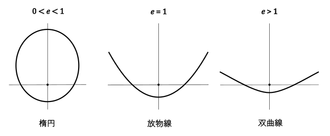
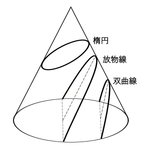

エキセントリシティ
eccentricity 【èksəntrísəti, -sen-】
１ [Ｕ]（言動・性格・服装などの）異常、風変わり（なこと）≪in, of≫。異常さ、変わり具合
１ａ [Ｃ]〔しばしば-ties〕常軌を逸した行為、奇行、奇癖
２ [Ｃ]《機械》偏心（距離）。《数学》離心率
第 一 章 ２０３２年 夏
（一）
「てかさー、堅書君……だっけ？ あいつ何なの？ 休み時間もずっと勉強しててマジ怖いんだけど」
「私も思った！ せっかく同じ班になったのにさ、話し掛けるなってオーラ出てるし、協調性ゼロって感じ。この飲み会も速攻断るし。最悪」
女子二人がハイボール片手に欠席裁判で盛り上がってるのを、冷めたポテトフライをつまみながらあたしはぼんやり眺めている。ハデ目のメイクにショートヘアの子と、雰囲気が小動物系でぱっつんボブの子。心の中で勝手にハデ子と小動物ちゃんって呼んでる。思ったよりこいつら口が悪いなー。さっきまで一緒になってバカ騒ぎしてたけど、なんかちょっと醒めた。まあ変に善人ぶるよりは正直でいいのかもだけどさ。
「まあ……。用事あったのかもしれねえしさ。明日、課題一緒にやろうって誘ってみようぜ」
「だよな、急だったし……。堅書君、前から実験一緒だったけど、悪いやつじゃないよ。コミュ障なだけで」
変なＴシャツの男子と眼鏡の男子は、ヒートアップする女子組をなだめにかかってる。このまま女子が結束しちゃって、女子と男子が断絶しちゃうのを恐れてるんだろうな。こっちもまあ、女子の悪口に迎合するよりは全然マシ。でも変Ｔ君も眼鏡君も完全にやり方間違ってるし、すっかりハデ子と小動物ちゃんに気圧されてる。
この空気がデフォになっちゃったら面倒だなー、と思いながら塩キャベツを口に放り込む。頼んだ生レモンサワーは全然来ない。
三条の大衆居酒屋。三回生前期の演習の後半は、六人の班単位で課題をやることになっていて、今日は結成記念の飲み会だった。
厳正なる抽選の結果、うちの班は男女三人ずつっていう工学部にしては奇跡的な構成になって、合コンかよとかイカサマじゃねって怨みのこもった視線が、男子率１００％の班からガンガン飛んできてた。しかも今夜のこの飲み会は男子一人が欠席したことで、集団としてのレア度はさらにＳＳＲまで跳ね上がってたりする。
その欠席者が、さっきからこのテーブルでめっちゃ話題の堅書君だ。学科の中でも印象薄くて、そういやいたっけ、って感じのやつ。たぶんこれまであたしはしゃべったことなかったと思う。
班分けが終わってＴＡさんが課題を説明してる間、堅書君は何か英語の本をずーっと読んでた。どう見ても演習と関係なさそうな、医学っぽい表紙の本。何やってんだろこいつ、って思った。演習の後、親睦会を兼ねて飲みにでも行こうかってみんなで盛り上がってる横で、堅書君だけはリュックに荷物をまとめて、そそくさと帰ろうとしてた。眼鏡君が「飲み会、行かないの？」って声をかけたら、「いや、その、そういうのちょっと……。すいません……」とかなんとかモゴモゴ言いながらスーッと消えてった。そりゃ、心証悪くするわ。あたしだってさすがにちょっとイラッとした。
でも、まあ、このまま悪口大会になるのもなんかイヤだった。せっかくのお酒が不味くなる。
「へえ、堅書君と実験一緒だったんだ！ ……あ、レモンサワーこっちでーす！」
やっと運ばれてきたサワーとレモン絞り器を受け取りつつ、眼鏡君の会話からパスをつないで、話を少しはポジティブな方向に持ってこうとする。ていうか、あのコミュ障野郎と知り合いなの、めっちゃ助かる。通訳代わりになってもらおっかな。本人とはまともに話できそうにないし。
「ああ。一回生の物理学実験。ちょうどあいつと二人一組だったから」
箸で焼鳥を串から器用に外しながら、眼鏡君が答えた。
「物理学実験ってあの、めっちゃキツいってやつ？」
「うん、それ。レポートがすっげえ地獄でさ。で、堅書君に毎回見せてもらって」
「え、マジで!?」
「マジ。あいつ人見知りなだけで、話すとまあ、普通にいいやつだし、課題とかもちゃんとやるタイプ」
予想外の耳寄り情報に、みんなが一気に食いつく。
「実は重宝する系？」
「それめっちゃ助かるわー」
少なくとも戦力としてはカウントできそうで、少しほっとした。
「なんだ、サボる気満々なんかなって思ってたわ」
「だよね。人の話、ぜんっぜん聞いてなさげだったし」
「そこは大丈夫だと思うよ。基本、真面目だし、頭もいいしね。……あ、でも」
眼鏡君はちょっと言いよどんで、ジョッキに残ったビールを一息にあおった。
「——昔はもう少し人付き合い良かったかも。飲み会とかも一応出てたし、あんな勉強一筋って感じじゃなかった。なんだろうな、もうちょい人生楽しそうだったっていうか」
何やら不穏な流れに、全力でレモンを搾ってたあたしの手が思わず止まる。
「え、なにそれどゆこと？」
「んー、なんかあいつ、最近ちょっと変わったんだよね。前はもっと普通だった」
さっきまでボロクソ言ってた女子組もヤバって顔をしてる。
「は？ やっぱ今は普通じゃないってこと？ てか、昔は飲み会出てたんだ？ それってなんか余計ムカつかない？」
ああもう、またそっち方向に話戻さないでよ、とハデ子に内心うんざりしてると、
「俺の見立てによるとだな。……それはずばり、彼女に振られたんだな！」
と斜め横から断言調で迷推理が飛んできた。変Ｔ。なんでうれしそうなのこいつ。
「えー、〝彼女〟未満の段階なんじゃない？ 片想いの相手に告って玉砕した的な？」
「絶対それ！ どう見ても、彼女いない歴イコール年齢ってやつ！」とケラケラ笑う女子たち。なぜか言葉に詰まる変Ｔ。
だけど、それを眼鏡君は即座に否定した。
「や、堅書君は彼女いたよ」
瞬間、みんなの笑い声が止まった。眼鏡君は淡々と真顔で、でも自信ありげに続けた。
「ていうか、いる。たぶん今でも普通につきあってると思う」
（二）
「え？ 堅書君て彼女いるんだ!? あはは、まさかの展開！ 面白すぎ！」
「なんだと……。堅書でさえ彼女がいるのに、俺は、俺は……」
再び大爆笑する女子二人とうなだれる男子一人を無視して、
「えマジで？ それってどんな人？」
とあたしはやや食い気味に尋ねる。あんな協調性ゼロ、コミュ障の塊みたいな人間に彼女さんがいるなんてびっくりで、単純に好奇心がうずいた。
「僕も会ったことはないけど……。だいぶ前だけど写真見せてもらったら普通に美人だった。なんかハーフツインテール？ ていうのかな？ 髪が」
眼鏡君はジョッキを置いて、両耳の上あたりで髪を軽く束ねるような仕草をしてみせる。
「え、ヤッバ！ 何それ二次元？ あ、Ｖカノ？」
「や、普通にリアル。京斗大生って言ってた。学部は違うっぽい」
「マジかー！ てか、うちの大学でハーフツインて何者!?」
「あ、あと高一からずっとつきあってるって言っててびびった」
「高一！ 足かけ六年じゃん！ どんだけ！ すご！ すごすぎなんだけど！」
昼に会った堅書君とギャップがありすぎて、イメージが音を立てて崩れていく。
「テンションたっか」
「ハーフツインのリアル彼女だとぉ……。くそっ、あいつ、前世でどんな善行を積んだってんだよ……！」
「あんたＶカノと添い遂げるんじゃなかったっけ」
あの堅書君も、普通に恋バナなんてするんだ。なんか意外。ていうか、昔は別に〝普通の人〟だったって話だったっけ。だとしたら、何かあったんかな。普通の人が豹変しちゃうような出来事が。それこそ、その彼女さんに振られちゃったとか。
「ていうかさ、ほんとに今でもつきあってるんかな？ 急に振られて、落ち込みまくってんのかもよ？」と直球で尋ねてみる。
「少なくとも、先月の時点では、週一で会ってるとは言ってた」
「そっか。てか結構堅書君としゃべってんだね」
「うん。あいつ話振ると結構しゃべるよ。……それに、堅書君が何かおかしくなったのって、二回生の後期くらいからなんだよね。でも彼女とは今でも普通に続いてるっぽい。だから、なんとなくだけど、彼女は関係ないんだと思う」
会話をどうつなげたらいいかわからず、五人とも黙ってしまった。
「まぁ、倦怠期とかかもしんないよね。そんだけ長くつきあってるとさ——」
絞りきったレモン汁をサワーのグラスに注いで、あたしはわかったような口をきく。ほんとは何もわかってないし、言ってから自分でも意味不明な返しだなって思う。それにしても、二回生の後期って何かあったっけ、って考えてみたけど心当たりは全然ない。
小動物ちゃんがカルーアミルクをマドラーでくるくるかき混ぜながら、
「おかしくなった、って、メンタルとかかな……」と深刻そうな声で言う。さっきまで本人が聞いたらメンタルやられそうな誹謗中傷連発してたのあんたでしょ、と心の中でそっと突っ込みを入れる。
「あ、いや、あいつ、別にメンタルとかはないと思うよ。ちょっと言い過ぎだったかも。悪かった」
眼鏡君があわてて言い直す。
「そうだな、ええと、おかしくなったっていうより……うーん、なんだろうな、余裕がなくなったっていうのかな。必死感ていうか。受験生の十二月みたいな感じ？」
「ああー……」
大学受験は一応あたしたちの共通体験だったから、眼鏡君のその一言でみんな妙に納得した。そっか、ああいう感じか。でも、何なんだろうな？ まさかここまで来て仮面浪人なわけないし。
「なんだろ、就活？」
「えー、そもそも就活ならまずコミュ力上げろよって思わん？」
「だよねー。私達だってさ、バイトとかインターンとか死ぬほど入ってるけど、演習もちゃんとやってきたいからこういう会を設けてんのにさ」
「院試だって、まだ一年以上あるしな。いや、むしろ今年が遊ぶ最後のチャンスなんだよな……。人生最後の夏休み、か……。くっ……」
またもや謎にくずおれている変Ｔの横でぼそっと眼鏡君が放った一言が、今日の飲み会で一番のハイライトだったかもしれない。
「なんかあいつさ、もう研究室に入ってんだよね」
「ええー!?」
「マジ？」
「はあ？ なんで!?」
「ちょ、研究室配属って四回生からじゃないの？」
うちの学部は四回生になると研究室に配属されて、一年かけて卒業論文を書くことになっている。だいたいの研究室は今あたしたちがいる吉田キャンパスから遠く離れた桂キャンパスにあって、四回生と院生、教職員しかいない灰色の陸の孤島は、毎日がお祭りみたいな吉田とはあまりに別世界っていう印象があった。
「じゃあ堅書君って、桂に通ってるってこと？」
「そうらしい。あいつ講義終わるといつも桂バスで速攻あっちに帰るんだよ」
だから、演習のあとすぐに消えてたのか。
「てことは、家も桂？」
「うん、元々実家住みだったらしいんだけど、なんか最近、桂で一人暮らし始めたって」
「気ィ早すぎ！ 私なんかむしろ一秒でも長く吉田にとどまりたいんだけど」
それはあたしも同感で、来年四月から〝島流し〟にあうことを考えると、正直ちょっと憂鬱だった。
「だいたい、三回生で研究室って、制度的にアリなの？」
「どうなんだろ。正式な配属じゃなくて、ただ出入りさせてもらってるってだけなんじゃね？」
「かもしれないな。千古研らしいんだけど、あの先生よく『気軽に遊びにおいで〜』って言ってるし」
「あー、それ、めっちゃ言ってそう」
千古先生は、奇人変人が多いうちの学科の教授陣の中でもとびきり変わってて、講義もカオスすぎて何言ってるのかわかんなかったけど、とにかく楽しそうにやりたい放題やってる先生だった。もっとも、本人は普段はあまり桂にも吉田にもいないらしくて、御所の近くにメインオフィスがあるんだって言ってた気がする。
「いや、でもさ、遊びに行ってるってレベルじゃなくない？ 引っ越しまでしてんでしょ？」
「やっぱ堅書、あいつおかしいわ。普通じゃねーわ。大丈夫なのかよ……」
「私は千古研って聞いてなんか納得。あの研究室にはマッドな人間が吸い寄せられる何かがあるんだろうねー」
結局、堅書君はやっぱり変だという結論で全会一致して、班の結束がちょっぴり高まった気がした。険悪な雰囲気もいつの間にか消えていた。
教室の堅書君の横顔をうっすら思い出す。どこか思い詰めたようなあの横顔を。
「マジで、堅書君って何考えてんだろうね？ ま、うちら凡人にはわかんないんだろうけどさー」
変人の考えてることはわからない。今日の飲み会のそんな結論に満足しながら、あたしは大皿に最後まで残ってた〝遠慮のかたまり〟に遠慮なく箸を伸ばした。
（三）
話をしてみると、確かに堅書君は思ったほど取っつきにくいヤツじゃなかった。口数は少ないし、ちょっとキョドってるけど、最低限の世間話くらいには乗ってくれる。ただ、いつまでも「ですます」口調を崩さないのでハデ子がキレて「ですます禁止！ 使ったら罰金五百円ね！」と宣言してからは、班のメンバー内ではタメ口で話してくれるようになって、少しは馴染んできたかなと思う。あたしは別にどっちでもいいんだけど。
堅書君の彼女さんの話は、あの飲み会の翌日の休み時間にしっかりイジられた。
「堅書ぃ、お前さ、何抜け駆けして彼女作ってんだよ！ 俺にも写真見せてくれよぉ！」
変Ｔは今日もまた別の変なＴシャツを着ている。抜け駆けも何も、変Ｔと出会う三年も前から堅書君は彼女さんとつきあってるんだから、言いがかりってレベルを超えている。
いきなり特大の理不尽をぶつけられて怪訝な顔をしてる堅書君に、眼鏡君がバツの悪そうな表情で、
「ごめん、昨日の飲み会で堅書君の彼女の話になってさ」
とフォローする。ハデ子と小動物ちゃんも「堅書君の彼女？ 見たい見たーい！」と寄ってくる。
「え、あ、その……」
「写真、見せて見せてー！」
詰め寄られて堅書君も観念したのか、渋々スマホに一枚の写真を表示させた。場所は鴨川の河川敷みたいに見える。意外にも露出度の高い服を着た長髪の女性が立っている。かなり大胆なショルダーカットに、ぴっちりしたショートパンツ。しかも服の中央にスリットがあって、おへそが丸見えになってる。ちょっとすごいな。こういうのが堅書君の趣味なんだろうか。
……が。
肝心の顔が、よく見えない。かなり引きで撮られてて、ポートレートというより風景写真の中にたまたま人が映り込んでる、って感じ。それに彼女さんも、やや顔をそむけ気味だ。髪も、ハーフツインなのかただのロングなのかよくわからない。スタイルもいいし、美人っぽいことは何となくわかるけど、たぶん街で会っても気づかないな、これ。
「これじゃ、顔わかんなくない？ もっとアップの写真ないわけ？」
「堅書君さあ、わざと解像度低い写真出してきたでしょ！ にしても服すっご」
「うおお、俺には見えるぞ！ ハーフツインの美少女が恥じらっている姿が！ 泣きぼくろが神々しい！」
変Ｔ、どういう目をしてんの。そもそもこの粗い画像のどこにそんな情報量が含まれてるっての。
これ以上の写真が出てこないようなので、あたしは質問タイムを開始する。
「エグいねー。うちの大学ってマジ？ 何学部？」
一瞬、間があった。
「あ……。そ、総合人間学部……」
「総人！ 総人ねー。あー、うん、なるほどー……」
工学部のあたしにとっては文系とも理系ともつかない謎の学部なので、話をどう続けたらいいかわからない。
頼む、堅書、合コン設定してくれ！ と一人懇願してる変Ｔを無視して、方向転換する。
「高校の時からなんでしょ？ すごいじゃん。どういうきっかけ？」
「えっと……。僕と一緒に図書委員をやってて」
「へえ、堅書君、図書委員だったんだ！ うんうん、いかにもやってそう。休み時間とかいっつも難しそうな本読んでるもんね」
「……」
堅書君は心なしか顔が赤くなってるようにも見える。でも、照れてるのか、怒ってるのか、戸惑ってるのか、よくわからない。
「ねぇねぇ、総人って吉田南でしょ？ 大学内でしょっちゅう会えるじゃん。いいなー。今日も会ったりした？」
割り込んできた小動物ちゃんは遠恋中なので、心底うらやましそうだ。
「いや……しばらく会ってない」
「しばらくって……どのくらい？」
「ええと……四週間。いや五週間、かな……」
場の空気が変わった。
「はぁ？」
「なんで!? すぐそこでしょ！ 隣じゃん！ なんで会わないの！」
「それ、やばくね？ 俺でもわかるわ」
「私だって月イチで東京行ってんのに。大丈夫なのそれ？」
「堅書君さ、週一で会ってるって言ってなかったっけ」
「ああ……あの頃はまだ会えてたんだけど、最近忙しくて」
「……Ｗｉｚは？ 最近送ってる？」
「送ってない……」
「ヤバいって。それマジで自然消滅コースだって」
「えー、彼女のほうも反応ないなら、もう手遅れなんじゃない？」
ダメじゃん、全然ダメじゃん、って思った。六年間も続いたことが奇跡なのかもしれない。というかもしかしたら、もうとっくに終わりを迎えてるのかも知れなかった。
一気にお通夜ムードになったところで先生が入ってきて、話はそこで途切れた。演習が終わると堅書君はいつものように秒で教室を出ていった。今から彼女さんに会いに行くとも思えない。例のバスで桂キャンパスに帰ったんだろうな。
それ以来、堅書君の彼女さんの話はなんとなくタブーになってしまった。だって、怖くて訊けないじゃん。あれからどうなったの、なんてさ。
堅書君はその後もいつも通り、淡々と講義や演習をこなしては、毎日バスで桂に帰って行った。課題やレポートは毎回ほぼ完璧で、あたしたち全員、何度助けられたかわかんない。でも、飲み会には何度誘っても来てくれなかったし、お昼ご飯もたいてい何かの専門書を読みながらぼっち飯してた。話を振ると一応答えてくれるけど、基本的に空き時間は何かしら勉強したりコーディングしたり英語の論文を読んだりしてて、なんとなく話し掛けづらい雰囲気だった。しかも演習中の余った時間にまで、何やら堂々と内職してた。先生やＴＡさんにもバレてたみたいだけど、課題はちゃんとこなしてるので黙認されてるっぽかった。
なんでそんなに猛勉強してるのか、ほんとに謎だった。聞いてもうまくはぐらかされた。だから、それ以上踏み込めなかった。
一度、班のみんなで集まって一緒に課題やろうぜって話になったことがある。前期の終わり頃だったかな、作業通話も何となく飽きてきたあたりだったと思う。小動物ちゃんが「どうせなら桂キャンパスに行ってみない？ そのほうが堅書君も誘いやすいし」とか言い出して、桂まで行くことになった。まあ、それはただの口実で、なんとなく夏の遠足気分でみんなとわいわいプチ遠出したかっただけだ。一応事前に、眼鏡君がＷｉｚで堅書君に連絡したんだけど、全然既読がつかない。いっつもそうだから、多分ほんとに読んでないんだと思う。だから、実質的にアポ無し突撃するしかなかった。
変Ｔが誰かから聞き出してきた堅書君の下宿は桂キャンパスの真裏にあった。いかにも昭和って感じの、今にも倒れそうな安アパート。住所間違えてんじゃねって言い合いながら部屋のドアをノックすると、ほんとに堅書君が出てきて、眼鏡君ですらびっくりしてた。だけど堅書君はあたしたちの誘いを迷惑そうに速攻断って、部屋に引っ込んでしまった。しょうがなく、あいつやっぱ変わり者だとか口々に言いながら、五人で桂キャンパスの図書館に行ってそこで課題をやったり、隣の建物の学生食堂で夕飯を食べてみたりした。でも、みんなだんだん口数が少なくなっていった。四回生になったら毎日こんな生活になるのかってどんよりしてたのはきっと、あたしだけじゃなかったんだと思う。しかも吉田までの連絡バスが結構早い時間になくなることを誰も知らなくて、結局普通のバスやら阪急やらを乗り継いで帰らなきゃいけなくなって、散々な目にあった。
あの日、堅書君のアパートの廊下で見た、海の家みたいなちっちゃい共同シャワー、扇風機の熱風の奥に見えた殺風景な部屋、人の気配のしない要塞みたいなキャンパス、強烈な日差しと草いきれの匂い、食堂で黙々と食べたチキンカツ、帰りのバス停から見上げた生ぬるい月。それらは一夜の夢みたいに、あたしの記憶の中に強烈に残り続けた。
まさか翌年、あの安アパートにしょっちゅう通う用事ができるなんて、当時は予想もしてなかった。
そのきっかけを作ってくれたのが、ヤタだったんだ。
第 二 章 ２０３３年 夏
（一）
「堅書君っ。やっほ」
ギシギシと軋む安アパートの廊下を歩いていくと、珍しく共同キッチンの前で堅書君と鉢合わせした。
「……何の用」
暑さのせいもあるのか、堅書君は少し不機嫌そうだ。ていうか、この前よりもさらにやつれてるみたいに見える。
「何の用って、ヤタのワクチン！ もう四週間経ったでしょ？ 堅書君、忙しくて忘れてんじゃないかなって」
小脇に抱えてきた折畳みの猫用キャリーを持ち上げてみせる。
「……ああ、もう四週間か」
「ほらぁ、やっぱ忘れてる！ 堅書君、Ｗｉｚも読んでくれないしさー。来ちゃった方が早いし」
ヤタっていうのは、三月に堅書君が飼い始めた子猫だ。真っ黒で、ちっちゃくて、子猫にしてはすごくおとなしくて、そんでもってめっちゃ可愛くて、会うたんびにぐんぐん大きくなってるから会いに来るのが楽しいんだよね。堅書君てば、猫の飼い方も知らないのにヤタを拾ってきて死なせかけて、たまたま実習の忘れ物を届けに来たあたしが見つけて速攻お医者さんに連れてって、その後もつきっきりであたしが一緒に世話をしたから助かったんであって、あたしはヤタの命の恩人なのに、まるで感謝してもらえてない。その後の育て方も危なっかしいから、こうして時々様子を見に来てる。
名前は堅書君がつけた。子猫用ミルクを数時間おきに飲ませ続けて数日すると、荒れていた毛並みもすっかり良くなって、カラスの濡れ羽色っていうのかな、真っ黒で艶やかになって、「つやっつやになったね！ カラスみたい」ってあたしが言ったら堅書君が「名前決めた。ヤタにしよう」って。ヤタガラスのヤタなんだって。なんか、導きの神様なんだって言ってた。
ヤタの面倒をしょっちゅう見に来れるのも、四回生になってあたしも桂に引っ越したから。去年だったら無理ゲーだったなー。あたしは堅書君とは別の、データサイエンス系の研究室に入って、今は卒業研究と院試の勉強を同時並行で進めてる。講義や演習はほとんどなくなって、基本的に研究室が居場所になるから、学科のみんなでつるむ機会もすっかりなくなっちゃった。桂での学生生活は思ったほど悪くはなかったし、研究はそこそこ楽しい。だけど、吉田でのバカ騒ぎが時々無性に懐かしくなったりもする。
見ると堅書君は、ちょうど瞬間湯沸かし器から両手鍋にお湯を張ってるとこだった。部屋のシンクは水しか出ないらしいから、光熱費の節約の一環なんだろうな。お湯の溜まった鍋を両手で持ち上げて、狭い廊下を歩いていく堅書君の横から、覗き込むようにして話し掛ける。
「なになにー？ 何か作んの？」
堅書君はすぐには答えずに、ちょっとウザそうな顔をする。そのまま開けっぱなしの部屋に戻ると、ドア脇の一口コンロに鍋を置いて点火し、換気扇の紐を引っ張った。
「ああ、これ。まとめて茹でようかと」
コンロ下の戸棚から出してきたのは、パスタの袋だ。
「お、パスタ？ パスタじゃん！ ほおー、堅書君パスタ作るんだ！ いいじゃん。何味？ カルボナーラ？ ジェノベーゼ？ マンマミーア？ ランボルギーニ？」
「塩味」
「ちょっとさあ、ツッコミくらい入れてよ！ ……って、え？ いやいや塩味って！ 当たり前じゃん、塩で茹でるんだから！ ていうか何でボケにボケで返すかなー」
「いや、だから味付けが塩で」
「はあ!? 塩オンリー？ 素パスタ？ 素うどん的な？ 副菜もなし？」
見るとコンロの脇には確かにお皿と塩とお箸しかない。その瞬間、今日もあたしは吼えてしまった。
「何考えてんの！ どんだけ極貧生活してんの！ 死んじゃうよ！ 待ってて今パスタソース買ってくるから！ 逃げないでよ！」
扇風機の回る音が部屋に響いている。半開きのドアからは、蒸した空気が廊下に流れ出している。堅書君は畳に座って、あたしは三和土で猫用折畳みキャリーにそっと腰掛けて、割箸でパスタを食べる。トマトソースとソーセージと野菜で超適当ナポリタン。チーズ入り。共同キッチンの三口コンロで、ちゃんとフライパンで炒めて作ったやつ。他にも野菜ジュースとか、レトルトカレーとか、サバ缶とか、常温保存できて栄養がありそうな物もいろいろ買ってきた。パスタのアレンジにも使えるしね。あと、勝手にお相伴させてもらったぶん、パスタの追加ストックと、ヤタのフード。
「マジで毎日三食、塩パスタだったの？」
「ああ。塩だけって、けっこう旨いんだ」
「そういう問題じゃないでしょ！ ……壊血病になるよ。ほら、昔、船乗りとかがなってたやつ。堅書君が倒れたらさ、ヤタはどうなんの」
「……」
「猫を飼うってのはさ、そういうことにも責任を持つことだかんね」
「……そうだな。ありがとう」
あたしが今いる三和土と堅書君のいる六畳間とは、上がり框で隔たれてる。ヤタもすぐそばで、無心に子猫用フードを食べてる。土足で入れるここまではあたしも立ち入らせてもらってるけど、それはあくまでヤタのお世話のためだ。靴を脱いで上がったりはしない。別に疑ってるとかじゃなくて、〝彼女持ち〟の男性の部屋にずかずかと上がるのはちょっと違うかなって思ってるから。
ていうか、彼女さんと今どうなってるのか、あれから訊けてない。でも、はっきりしないうちはここまでしか入らないって、自分の中で決めてるんだ。そんなこと口には出さないし、堅書君も何も言わない。奥行き数十センチのこの空間は自然発生的に生まれた、あたしたちの奇妙な緩衝地帯だ。
「んー、美味しかったっしょ！ やっぱ夏はトマトだねー」
食べ終わって横を見ると、堅書君も空になったお皿を畳の上に置いて、壁にもたれかかっている。ま、さすがに洗い物くらいは自分でやってよね、と思いながらお皿に目をやる。……あれ。何か残ってる。
違和感の正体は、きれいに除けられた輪切りのピーマンだった。
「あー！ ちょっと！ 何ピーマンだけ残してんの！ お子様じゃん！」
「うっ……その……」
「全部食べないと、買ってきた物全部持って帰るから！」
嫌そうにピーマンを口に入れてすぐに水で流し込む堅書君に呆れつつも、意外な一面を見た気がして何だか笑ってしまう。
「ふふっ……。あははははっ」
「お子様で悪かったな」
「ほんっとお子様だよ。ヤタもあきれてるってさ。ねえヤタ、お前のご主人様はなんでこんなお子ちゃまなんだろうねえ」
手を伸ばして、ヤタの耳の付け根をこちょこちょする。ヤタは小さく鳴いてあたしの足元にごろんと寝そべる。
「でもさ、ピーマンが苦手でも、パプリカならいけるんじゃないかな？ あれなら苦くないしさ。彩りもきれいだし」
すると堅書君が軽く鼻で笑った。
「何笑ってんの！ 笑うとこじゃないでしょ！」
「あ、いや、ごめん。その、つい最近まったく同じことを言われたから……」
「え？ 誰に？」
思わず反射的に訊いてしまった。
「う……、かっ、彼女に……」
あ……。
彼女さんと、ちゃんと続いてたんだ。
そっか、そうだよね。六年もつきあってるんだもんね。そう簡単には別れないよね。まったくもう、心配させないでよ。安心したけど……なんだろう、そうならそうと早く言ってよ。
上がり框の段差が、とても高く見えた。やっぱり、ここから先には立ち入らない。調子に乗っちゃいけない。
「あはは、彼女さんにまで心配されてんの!? 彼女さん、気の毒すぎるわー。ていうか元気なの？ ちゃんと連絡取ってんの？」
「ああ、先月久しぶりに少し会えたんだ。連絡はなかなかできてないけど」
「先月!? ダメじゃん！ やっぱダメじゃん！ むしろあたしのほうが会ってんじゃん。いぇーい、勝ったね」
「かもしれない」
「ちょっと！ 何認めてんの！ 知らないよー？ このまま勝ち進んじゃうよ？」自分でもなんかテンションおかしい。言ってることと思ってることがバラバラだ。
「いや……、僕だって好きこのんで彼女を放置してるわけじゃない。一時たりとも忘れたことはない」
ほらね。だから調子に乗るなっつーの。そりゃそうだよね。なんだかんだ言っても、恋人だもんね。
でも。
だとしたら。だとしたらさ。
「——じゃあ、なんで？」
言ってしまった。ずっと訊きたかった、だけど心の奥底に押し込めていた問いが、ふつふつと湧き上がってくる。堅書君に突きつけるなら、今しかない、と思う。訊けばきっと、少しは楽になれる気がする。
「忙しい忙しいって、何がそんなに忙しいの？」
そんなに恋人のこと放置してたら、つきあってる意味、全然ないじゃん。毎日イチャイチャしてるほうが、まだ納得できる。もういっそのこと、別れた方が良くない？ なんて思ってしまう。でも、きっとそれは無意味だ。だって、恋人すらなかなか会わせてもらえないのに、あたしなんかが近寄れるわけがないよね。
わからない。堅書君が、わからない。
「彼女さんもヤタもほったらかしにして、学科の行事や飲み会も全部すっぽかして、食事だってこんなに切り詰めて、はやばやと研究室に入っちゃって、休み時間もずっとベンキョしててさ」
学科のみんなもあたしも、どんだけ堅書君のこと心配してると思ってんの。
「院試だって願書出さなかったんでしょ。あたし、てっきり千古研にそのまま進むんだと思ってた。だから猛勉強してるのかなって思ってた」
あ、ダメだ、なんか止まらなくなってる。自分の声が震えている。
「ねえ、堅書君はさ」
気がついたら立ち上がっていた。ヤタの真ん丸な目がこちらを見上げている。
「そこまで自分を追い詰めて、大学生活全部放り投げて、何をしようとしてるの」
堅書君は一瞬ひるんだように見えたけれど、ゆっくりと口を開いた。
その返事は、全然、答えになっていなかった。
「……どうしても、会ってお礼を言いたい人がいるんだ」
話がまるで見えない。
「え……。どういう意味。それって誰」
バカみたいな返事しかできない。頭の回転が速すぎる人って論理が数段飛ぶっていうけど、これがそれなのかな。
「僕はその人のことを、いつも『先生』と呼んでいた」
遠いどこかを見つめながら、ぽつりと堅書君がつぶやいた。その表情は、なんだか不思議と、高校生くらいの男の子に見えた。
（二）
「先生？ ……高校の先生とか？」
話が飛びすぎてついていけない。でもなんか、この話はちゃんと聞かなきゃダメな気がした。そう思えるくらい、堅書君はなぜか無防備に見えた。いつも周りに張り巡らされてた見えない防護壁が、今は全然感じられなかった。
「いや、違う。別に教師だったわけじゃない」
私は再び三和土にしゃがみこんで、ヤタのおなかをそっと撫でながら堅書君の話に耳を傾ける。
毛並みと体温を手のひらに感じるうちに、さっきまでの荒ぶった気持ちが少しずつ落ち着いてくる。必死こいてた自分が、今さらながら少し恥ずかしくなってくる。
「だけど、なんていうかな……。『先生』としか呼びようがないんだ。思い出すたびに『先生』と言いたくなる」
「ふうん……？ よくわかんないけど、大切な人だったんだろうなってことはわかるよ」
「ああ。彼女と出会えたのも先生のおかげだ。本当に、いろいろなことを教えてくれたんだ。何もできなかった僕に、やればできるということを教えてくれた。周囲に流されてばかりだった僕を成長させてくれた。大切な人を守るための強さをくれた。今でも苦しいとき、悩んでいるとき、僕は先生の言葉を思い出す」
一言一言、慈しむように堅書君は言葉を紡いでいく。いつもの寡黙な堅書君とは別人みたいで、その静かな熱量にあたしは少し驚く。
「——だけど先生は、僕の前から消えてしまったんだ。いや、僕が消してしまった。この手で」
話がどんどん意味不明になっていくけど、その口調は真剣そのものだ。
「あの時はそうするしかなかったと頭では理解できても、それがずっと心の重しになっていた。なぜ先生は消えなければならなかったのか。消えるのが僕ではいけなかったのか。あんな形で先生を踏み台にして、僕だけが幸せになってしまっていいのだろうか、そう思っていた」
あたしに説明するというより、なんだか自分に言い聞かせてるみたいに聞こえる。何か、辛い思い出があるらしいことだけは伝わってきた。そして堅書君がそれに対して、ずっとある種の罪悪感を抱いていることも。ふと、サバイバーズ・ギルト、という言葉を思い出す。生き残った者が感じる罪の意識。自分だけが幸せになってはいけないと思ってしまう気持ち。
「だけど、二回生の時にわかったんだ。先生は消えたわけじゃなかった。どこかの世界に、確かにいるのだ、と。その情況証拠を僕は掴んだと思っている。だから僕はそれを確かめたい。もう一度先生に会いたい。もう一度だけでいい。会ってお礼を言いたい。もしかすると生きているうちには無理かもしれないけど、それでも僕は、先生のいる世界に手を伸ばしたい。その可能性に賭けようと決めた」
先生にもう一度会うことで堅書君が過去の呪縛から解き放たれるのなら、あたしは全力でそれを応援したいって思った。堅書君は優しいから、たとえこの先どれだけ幸せな人生を送ろうとも、心のどこかで先生に対する罪悪感を持ち続けてしまうんだろうな。サバイバーズ・ギルトは解消されなきゃいけない。そのためだって言うのなら、学生生活のすべてを犠牲にしようとする堅書君の奇行も、少し許せる気がした。堅書君は、幸せにならなきゃいけない。
「そっか。堅書君はどうしても先生に会いたいんだね。うん、応援する。何かできることがあれば、手伝うよ」
「……ありがとう。今日もこんなに助けてもらって、感謝している」
堅書君は、思いを吐き出したせいか、どこかほっとしてるようにも見えた。
「でさ、先生に会うことと、堅書君の猛勉強と、どんな関係があんの？」
「うーん。どう説明すればいいかな。……僕は、京都歴史記録事業センターの職員になりたいと思っている」
「京都歴史……？」
「千古さんの講義を受けてるなら、アルタラセンターと言ったほうが通じるかな」
「あ、講義で聞いた！ 量子記憶装置とか、クロニクル京都とかでしょ」
「そう、それ。歴史記録事業センターの中でも特に量子記憶装置の管制を専門に司る部門。そこを目指している」
アルタラセンター。確か、京斗大とプルーラ社と京都市だか京都府だかでやってる、産学官の共同事業の母体。アルタラっていうでっかい球体の写真は見たことがある。千古先生はそこのセンター長を兼務していて、吉田や桂にほとんどいないのも、センターにほぼ住んでるからって言ってた。
そこに、堅書君の先生がいるってことなんだろうか。
「アルタラセンターってさ、そんなに勉強しないと入れないの？ 普通の就活じゃダメなんだ？」
「研究機関だし、国際事業の一翼でもあるからね。普通は学部卒では入れない。職種にもよるけど、複数の高度技術試験に合格しなければならない」
「ほえー。そんなに大変なんだ。千古研のコネがあっても無理なの？」
「千古研に在籍しているだけで入れるなら、僕だってこんなに苦労はしていない。センターにいる千古研出身者は数人だけだ。しかも千古研で博士号を取ってもエンジニア採用ではたいして重要視されない」
ふぅ、と一度ため息を吐いてから、堅書君は熱っぽく語り続ける。
「院生として千古研に入ったところで、直接アルタラを触らせてはもらえない。所詮、学生の立場だから、アルタラのビッグデータを間接的に扱う研究がせいぜいだ。アカデミックな研究としては興味深いけど、僕が目指すのはそこじゃない。だいたい千古さん自身、全然桂にいないしね」
「じゃあ、なんで三回生から千古研に入ってたわけ？ 千古研に行っても無駄っていう話に聞こえたけど」
「正確には二回生の終わりから出入りしてた」
「はっや！」
「学部のうちに基礎知識として、千古研で博士号を取得するのと同等の知見とスキルは一応持っておきたかったんだ。桂なんかで五年間もモタモタしてられないし。それに、まあ吉田にいるよりは現場の生の情報も入りやすかったからね」
さすがにちょっと引いた。やっぱ、頭おかしい。
「えぇー……。普通に学部の勉強やりながら、そんなことしてたの!?」
「まあ、ほら、うちの大学、単位が空から降ってくるって言うし。それと般教の自然群あたりは高一の頃にひととおり即席で詰め込んでたから」
「高一で!? なんで!?」
「ええと、なんていうか……ちょっと特訓的なことをやってて、先生と」
「先生と、特訓……!?」
「主に物理や化学と、そのための数学くらいだけど」
「ヤッバ……」
高一で大学レベルの特訓って何。堅書君の先生とやらも、相当危ない人っぽい気がする。
それにしても、堅書君が早い段階から桂キャンパスに通ってたのは桂に身を捧げるためなのかと思ってたけど、むしろ逆だった。桂での院生生活五年間を早回しすることで、桂から早く去るためだったんだ。あれほどストイックな堅書君でさえ桂キャンパスを出たがってたなんて、何か笑っちゃった。
「だから堅書君、院試受けないのかー。アルタラセンター一本勝負なんだ」
「ああ。これに賭けてる」
大博打だなあという気もするけど、やりたいことを追いかける姿はちょっとうらやましいなって思った。あたしは、なんとなくまだ就職したくなくて大学院を考えてるだけだし、修士課程を出た先で自分が何をやりたいのかも見えてない。
「てことは、アルタラセンターにその先生がいて、一緒に働きたいってこと？ でもさ、お礼を言うだけなら、普通に千古先生にでも頼んでみたら会わせてくれたりしないんかな」
「うーん……。今のセンターにはいない、というべきかな。まあ、アルタラセンター自体は足がかりにすぎない」
あれ、先生って、センターの人じゃないんだ。海外のこの分野の権威とかなのかな。センターの人脈を伝手に、何とか接点を作ろうとしてるとか？
「それと、千古さんに頼んでも会えるわけでもない。というより千古さんには先生の話は一切していない」
「え、なんで!? 千古研の先輩とか、センターの人にも？ ええと、あと何てったっけ、助教の女の人」
「徐さんかな。話してない。千古研やセンターの人達も知らないと思う」
意味がわからなかった。こういう時って、普通は同じ分野の人に相談してみるもんだよね。なのに、なぜか堅書君は一人で全部やろうとしてる。
一瞬、ぞくりとした。
この人は、堅書君は、あの千古先生の研究のさらに先に行こうとしてるのかもしれない。何か、とんでもないことをやってやろうとしてるのかもしれない。
なんていうか、もうそれは、あたしなんかが聞いたってきっと理解できるわけないんだろうな、って気がした。
堅書君はアルタラセンターに入って、そんでなんか頑張って、先生に会う。あたしがわかったのはそれだけだ。まあ、危ない話とかじゃなくて少しほっとしたけど。
あ、でも。
この話を知る権利がある人が、まだもう一人いる。堅書君の密かな野望のせいでめっちゃ苦労させられてるらしい人が。
「じゃあさ、彼女さんは……？」
背中を汗がつたうのを感じた。
「彼女さんは知ってるの？ 堅書君が何のためにこんなに苦労してるのか」
「ええと……。アルタラセンターに入りたいっていうこと、それまでの数年間、勉強に専念させてほしいということは伝えている。彼女もそれを認めてくれて、僕の好きなようにやらせてくれている。だけど、その目的が先生との再会だということは、たぶん知らないと思う」
「そうなんだ……」
さすがに、何も知らされずに放置ってわけじゃなかった。納得もしてくれてるんなら、うん、まあ……良かった、んだろうな。
でも、先生のこと、恋人にも話してないんだね。ひょっとして、ひょっとするとこれ、堅書君の他は、あたししか知らないってことなんだろうか。
「先生の話、あたし聞いちゃって良かったんかな」
「ヤタのことでこれだけ世話になってるし、専門的な話も通じるから、まあ訊かれたら話してもいいかなと思って。僕自身の問題だから、基本的には他言しないつもりだけど」
「……ん、そっか」
千古先生も恋人も知らない、ささやかな秘密だ。
「ふふ、じゃ、あたしもみんなには黙ってるね」
その時、ヤタが小さく鳴いた。
「そっか、ヤタもだね。この話は、堅書君とあたしとヤタだけの秘密。ヤタ、人に言っちゃダメだかんねー」
ヤタはすりすりとあたしのサンダルの先に甘えてくる。甘えるのは子猫の特権だ。
片手でヤタをあやしながらあたしは、このまま堅書君が恋人を放置して勉強を続けてくれても別にいいんだよって思っちゃってるのに気づく。こんな風に、時々ヤタのお世話をしながら、ただ堅書君と他愛のない話をする。そんな日常がずっと続いてくれればいいなって。
だけどそれって、堅書君の人生にとって、いいことなんだろうか、とも思う。
やりたいことがあるのはわかった。幸せになっていいんだと堅書君が心の底から思えるためなら、その夢は絶対に叶えるべきだと思った。だけど、そのために恋人と会うのも我慢して、毎日不健康な食生活して、一分一秒も惜しんで貴重な大学生活を勉強に捧げるのって、どうなんだろうか。
将来の大きな夢と、日常の小さな幸せ。
あたしの中で、二つの矛盾した感情がぐるぐるせめぎあっている。
「でもさ」
少し考えて、やっと口にした。
「先生に会いたいのはわかったけどさ、堅書君は無理しすぎなんだよ」
本と机とＰＣしかない部屋を見回しながら続ける。
「こんな生活してたらマジ死んじゃうって。勉強しながらでも、もうちょっとこう、大学生らしい楽しみとか、生活の彩りとかさ。就職しちゃうならなおさらだよ」
「そんな器用なことはできないよ。僕は要領が良くないから、一分一秒でも愚直に頑張るしかないんだ」
「堅書君てさ。……わりとドＭだよね」
堅書君は少し考え込んだ後、急に何かに気づいたみたいな顔をして、こんなことを言った。
「思ったんだけど、僕の先生もまた、自らの目標のために他のすべてを犠牲にしてきたんだ。時間も健康も人間関係も全部切り捨てて、十年もの歳月をただひたすら目標遂行だけに捧げてきた。……もしかすると、先生を追いかけるあまり、知らないうちに僕の生き方もそれに縛られてしまってるのかなって」
それを聞いてさすがに、バカかなって思った。ベンキョしすぎて、バカになっちゃったのかなって。だから思わず言っちゃった。
「は？ バカじゃないの!? いくら恩師だって、所詮、他人じゃん」
露骨にムッとする堅書君。他人じゃないんだよって顔をしてる。結構、考えてることがそのまんま顔に出るんだよね。うん、まあ、ちょっと言い過ぎたかな。ごめん。
もしかしたらそれは、堅書君なりの、サバイバーズ・ギルトに対する不器用な償いなのかもしれなかった。あえて先生と同じ苦労を背負い込むことで、少しでも不公平さを埋めようとする、無意識の行動なのかもしれない。
だけど、やっぱりそれは間違ってる、って思った。堅書君がそこに負い目を感じる必要なんて、全然ない。
「いや、まあ、なんつーかさ、先生は先生の人生、堅書君は堅書君の人生があってさ、それってまるっきり別物なわけじゃん」
他人の人生をなぞったってしょうがない。堅書君は自分の人生をちゃんと生きて、それで堂々と先生に会いに行けばいい。
堅書君は何か反論したそうにも見えたけど、黙りこくって何やら考えている。
「それに先生だってそんなこと堅書君に望んでないと思うよ。先生がどんだけ苦労したかしんないけどさ、教え子にもそれを体験させようなんて、負の連鎖だよ」
「…………」
「だから、堅書君が先生に憧れる気持ちはわかるけどさ、それに人生を束縛されちゃダメだよ。そこまで生き急がなくたって、先生だってきっと待っててくれるよ」
「……そうか」
「もっとさ、大学生らしいこともやりなよ。今日みたくダラダラおしゃべりする日があったっていいじゃん。ヤタのことも堅書君のことも、いつでも力になるからさ」
「そうだな。ありがとう」
「彼女さんともたまには遊びに行ったりしてあげなよ」
調子に乗って、さっきまでは思ってもみなかったことを言ってみたりする。でも今はなんだか素直にそう思えた。堅書君には、普通の大学生の楽しみをちゃんと知っておいてほしいって思った。
だってさ、あたしたち。
もう、四回生なんだよ。
「そんじゃ、ヤタ、そろそろ獣医さんのところに行こっか。あんまり遅くならないほうがいいし、お前のご主人様は今日も留守番して猛勉強だからねー」
立ち上がって、猫用キャリーを組み立てる。
「ほら、ヤタ、入んなー」
ヤタはどうしてもキャリーに入ってくれない。お気に入りのタオルを中に敷いてもダメ。抱えて入れようとしても、キャリーの入り口に足をかけて踏ん張って、手の間からするりと逃げちゃう。せっかくわざわざ実家から持ってきてよーく洗ったのに。うちのフクちゃんの匂いがついちゃってるか。んー、しょうがないなあ。抱え上げて、いつもの段ボール箱にひょいと入れると、大人しく丸くなった。
すっかりカピカピになったお皿を重ねながら、堅書君が「今日はありがとう。助かった」なんて殊勝なことを言った。
「ほんっと感謝してよね。これは貸し！ 堅書君がアルタラセンターに入ったら一万倍にして返してもらうってことで！」
動物病院の診察券とワクチン接種代を堅書君から預かると、段ボール箱を両手で抱えて廊下に出た。極貧生活を見かねて、ワクチン接種代も出世払いでいいよって言ったけど、堅書君は自分が払うと言って頑として譲らなかった。自分は塩パスタなのに、ヤタには結構いいフードをあげてるしさ。そういうとこだよね。
でもまあ、ともかく、まだまだヤタのことは堅書君に任せっきりにはなれない。今後さらに忙しくなるだろうし、やっぱり時々はここに様子を見に来る必要があるよね。当面はあたしがいなくちゃきっとダメだ。
廊下を歩きながら、段ボール箱の重みに愛おしさを感じる。ヤタが導きの神様ってのは本当なんだなあってぼんやりと思った。こんなに長く堅書君と話したのは初めてのことだったし、あたしは堅書君のことをすっかりわかった気になっていた。
だけど、堅書君は一番大事なことをずっと隠していた。それを知ったのは、卒業を間近に控えたある冬晴れの日のことだった。
第 三 章 ２０３４年 冬
（一）
「じゃあね、ヤタ。明日までいい子でお留守番するんだよ」
今日も安アパートのドアをパタンと閉めて、冷え切った廊下に出る。
堅書君は、猛勉強の理由を打ち明けてくれて以来、たまに研究室に泊まり込むときヤタの世話をあたしに頼むようになった。近くに住んでて猫の世話も慣れてて堅書君の事情も知ってて、頼みを断れないってわかってるから。洗いざらい話してくれたのはそれが理由かー。ほんっとあいつ策士すぎ。完全にあたし、都合のいい女じゃん。でもまあ、アルタラセンターの最終入所試験の結果も来月にはわかるらしいし、あたしも卒論をやっと出し終えて一息ついたし、何より二月のこんな寒い日にヤタを放っておけなかった。フードと水を用意して、ブランケットの他にタオルでくるんだ湯たんぽも置いてきたから、きっと大丈夫。
鍵なんて誰もかけてない不用心なアパートの廊下は静まりかえってて、ブーツ越しでも底冷えが伝わってくる。早くここから出ようと思った瞬間、急に廊下の奥に外の光が射し込んで、思わず目を細めた。
突き当たりにある表玄関が開いて、誰かが入ってこようとしてる。逆光で顔がよく見えない。だけど、シルエットは明らかに堅書君じゃなかった。
女性だ。
丈の長いコートに身を包んでいる。ストレートの黒髪の一部を、両サイドで結んでいる。
ハーフツインテール。
——彼女さんだ。堅書君の。
初対面なのに、一発でわかってしまった。
ずんずんとこちらに近づいてきた彼女さんは、あたしの一メートル先で立ち止まった。沈黙が流れる。彼女さんは軽く会釈すると、不機嫌そうにこちらを見据えて、静かに口を開いた。
「もしかして、堅書さんにご用でしょうか」
逃げられない。観念するしかなかった。
桂キャンパスの一角にあるカフェテリア。この時間は人もまばらだ。Ｓｅｌｅｎｅという、月の名を冠したその食堂で、どういう風の吹き回しか、あたしと彼女さんは向き合って座っている。
堅書君のアパートで堅書君の恋人と鉢合わせするなんて、最悪のシチュエーションだった。堅書君の部屋から出てきたところは見られてないと信じたい。アパートの廊下であたしは、自己紹介しながら必死に弁明した。自分は堅書君と同学科、同学年で、卒論関係の書類を届けに来ただけで、ノックしたけど不在だったんだ、って。前半は嘘は言ってないけど、書類から先は完全な出任せだ。ならば、と彼女さんが部屋を開けようとしてくれるのを、これは本人に直接渡して説明しなきゃいけないからとかなんとか言って必死に阻止した。ヤタが出てきてあたしにすりすりして来たらおしまいだ。
その後は完全にテンパってて、何を話したのか正直覚えてない。ただ、彼女さんは堅書君の部屋には結局向かわずに「貴方のことは、堅書さんから伺っています。どこかで少しお話を」なんてめちゃくちゃ怖いことを言い出して、それ以来お互いに終始無言でこのカフェテリアまで来てしまった。何。伺っていますって何。怖すぎなんですけど！
緊張しすぎて味がしないチキンカツを口に運びながら、あたしはあらためて正面の女性をそれとなく観察する。
誰がどう見ても完璧な、正統派ヒロイン。前に見た写真はよくわかんなかったけど、実物を見るとなんかこう、オーラが違う。最低限のメイクなのに目鼻立ちは整ってて、文句なしに美人の部類。服装は……今日はまともだ。だぼっとしたアイボリーのニットに、茶系のロングスカート。普通だけど育ちの良さを感じるのは、やっぱりこのヒロイン顔のせいだろうな。それに比べたらあたしなんて完全に、どこにでもいるモブの造形。情けないくらいに。
だけどこの彼女さん、さっきから、にこりともしない。何を考えてんのか全然読めない。寄らば斬るぞって感じの近寄りがたさを身にまといながら、ずっと押し黙ってきんぴらごぼうを食べている。怒ってるんだとしたら怖すぎるし、そうじゃないにしても相当な変わり者なんじゃないか、って気がする。堅書君がまともに思えてくるくらい変だ。ある意味、お似合いのカップルなのかもしれない。
居たたまれなくなって、あたしから尋ねた。
「あの……お話ってのは、えっと」
「ああ、名前をまだお伝えしていませんでした。一行、瑠璃と言います。一行、二行の一行」
言葉遣いは丁寧だけど、なんていうのかな、予想外にドスの効いた、素っ気ないしゃべり方。相変わらず不機嫌そうな仏頂面のままだ。
「いちぎょう……さん」
「総人の四回生です」
知ってるとおりの情報だ。
「あ、はい。えっと、あたしはさっきも説明したとおり、工学部の四回生で、同学年だから、タメ口で……いっかな」
「……いいですよ」
ＯＫしつつ、自分は合わせないんだ。やっぱちょっと変わってるな。まあ、このままタメ口で行かせてもらうね。こっちも敬語だと完全にあたしが一行さんに怒られてる構図になっちゃうから。ここは強気で行く。
「ありがと。よろしくね、一行さん」
「お気づきでしょうが、堅書さんと……交際を、している者です」
一行さんは唐突に彼女宣言してきた。何なんだ。まるでペースがつかめない。とはいえ、ドヤ顔でマウント取ってくる風でもなく、むしろ照れを感じる口調で、ちょっとだけバリアが弱まった気がした。警戒すべきなのか気を緩めていいのかわからない。それにしても、独特な表現をする人だな。
「はあ……それは、どうも」こちらも意味不明な返しをしてしまう。
「それで、話というのは、堅書さんのことです」
「ひっ」
キラリと光る刃のような言葉に、油断してた背筋が思わず伸びる。これ以上彼に近づかないでもらえますか、とかかな。あるいは、私達結婚するんです、とか。最悪の想像が無限に湧いてくる。
「堅書さんから、貴方がいつも猫の面倒を見て下さっている、と聞きました。今日もそれで来てくださっていたのですね」
ぎゃあ、全部バレてんだけど！ と、とにかく、いろいろと情報を下方修正しよう。堅書「君」なんて馴れ馴れしく呼んだらきっと殺される。あれ、もしかしてさっき廊下で口にしちゃったかな。……うん、まあ、忘れよう。
「あ、ああ、猫ね。そんな、いつもとかじゃなくてごくたまーにだけど、ほら、あたしも桂だし、堅書……さん、時々研究室に泊まったりするからさ、そういうときだけごはんをね。あ、部屋は入ってないよ！ マジで！ 玄関のとこでごはんあげてるだけだから」
「いつも、ありがとうございます」
責められるかと思ったら、無表情とはいえ感謝されて、拍子抜けした。またほんの少し、バリアが弱まった気がしないでもない。そうであってほしい。
「ところで、堅書さんがアルタラセンターを目指していることは、ご存じですか」
いや、なんつーか、この人も話があっちこっち飛ぶね。
「うん。知ってる。……って、あ、もしかして合格内定したの？」
「いいえ」
「落ちたの!?」
「結果が出るのは来月です。……ですから、今から話すことは、あくまで堅書さんが合格したと仮定しての話になりますが」
完全に翻弄されてあたふたしてるこっちを、一行さんがぐいと見据えてくる。
「堅書さんがアルタラセンターに入所後、やろうとしていることについては、どこまで情報をお持ちですか」
「え、えっと……」
たしか堅書君は、先生のことは彼女さんに話してないって言ってた。だから、黙っておいてあげたほうがいいんだろうな。あれは、あたしと堅書君の秘密だから。
「あー、実はよく知らないんだよね。何かやりたいことはあるみたいだけど」
「……そうですか」
沈黙。
え、何この間。怖い。何か本格的に怒らせるようなこと言っちゃったかな。怖すぎる。
そのまま一行さんは無言でお茶碗に残ったご飯の最後の一口に箸をつけ、お味噌汁を静かに飲み干した。完全に蛇の生殺し状態。一行さんはお茶を啜って一息ついてから、ようやく再び口を開いた。
「ならば、なおさらのこと、情報を共有しておかなければ」
緊張が走る。
「堅書さんの計画については、私なりに調査しました。恐らくですが、真相に近いところまでたどりつけたのではないかと」
怖っ！ 理解のある彼女さんかと思ってたけど、泳がせといて陰で全部把握してるってか。これ、絶対隠し事できないやつじゃん。いやあ、堅書君も大変な人を彼女にしちゃったもんだね。
この様子じゃ、先生のこともきっとバレてそうだな、とあたしは身構える。
だけど、続く一行さんの言葉は、あたしの予想を遥かに飛び越えてあさっての方向に飛んでいった。
「堅書さんは、おそらく、別の世界に行こうとしています」
「え？ 何？ 世界？ 留学？」
「別の宇宙、という表現のほうが伝わるでしょうか」
「……………………はい!?」
別の、宇宙。
何を言ってるんだろうこの人は。
「この宇宙の外に存在すると予想される別の宇宙、の意です」
一行さんの顔をまじまじと見る。冗談を言ってる顔には見えない。もしかしてスピリチュアルとかそっち系の人なんだろうか。
全然違うよ、堅書君はただ先生に会いたいだけなんだよ、と思わず言いたくなったけど、そういえば堅書君、「先生のいる世界に行きたい」って言い方をしてたのを思い出して、一気に戦慄する。意味不明だった先生の話も、そう考えるといろいろと辻褄が合うような気すらしてきて、頭がクラクラしてくる。
「荒唐無稽とお思いでしょうが、無理からぬことです。私自身、幾許かの疑念は残っていますから」
てっきり何かの比喩だろうと思ってたけど、百歩譲って先生が本当にどこか別の〝世界〟にいる、と堅書君が思い込んで、そこに行こうとしてるんだとしたら。考えたくないけど、一行さんの言うとおり、別の宇宙とやらをほんとに目指してるんだとしたら。
——頭おかしい。やっぱり堅書君は完全に頭おかしい。もはやバカとか変人とかそういう次元じゃない。人としてヤバい領域に突入してる。
そしてそんな話を真顔であたしに振ってくる一行さんも、負けないくらいヤバい。
だけど、なんとなく頭ごなしに全否定しちゃいけない気はした。背景に堅書君なりの筋の通った根拠があるんだろう、と思いたかった。同じ学科で学ぶ同士として、科学的思考くらいはまだ捨てないでいてほしいし、そもそも頭脳明晰な彼がスピリチュアルとかにハマるとはとても思えなかった。
それに——もしも堅書君が完全にただの妄想に取り憑かれてただけだったとしたら、彼の今までの頑張りは完全に無駄になっちゃうことになる。単なるデタラメのために、すべてを我慢してきたことになる。それはあまりにむごい。たとえほんの一握りでもそこに真実があって、堅書君は確かにこの世界の本質を見いだしたのであってほしい。頭では否定しつつも、このめちゃくちゃなホラ話を信じてみたいと思ってしまってる自分がいた。
だいたい、まだ話のイントロすらまともに聞けてない。〝別の世界〟というのも何か総人独特の言い方とかなのかもだし。早合点はよくない。一行さんは、あたしに、何かを教えてくれようとしている。堅書君にまつわる何かを。
「えっと、ちょっとまだ全然ついてけてないけどさ」
すっかり冷えきったお茶を一口飲んでから、あたしは背筋をただして、一行さんの琥珀色の澄んだ瞳を見すえる。嘘をつけない人の目だ、と感じた。
「とりあえず、最初から順を追って説明してよ。全然わかんないかもだけど、ちゃんと聞くから」
一行さんの瞳に強い決意の色が見えた。
「——わかりました。お話しすると決めたからには、中途半端はいけません。やってやりましょう」
長い話になりそうな予感がした。先にヤタの所に寄っておいて本当によかった、と思った。
（二）
一行さんは開口一番、
「まず、この宇宙がどうやって開闢したかについてはご存じでしょうか」
といきなりすごい魔球を投げてきた。あやうくデッドボールになるとこだった。とにかくボールを投げ返さなきゃ、話が続かない。
「え、えーっと……ビッグバンだっけ？ 宇宙論の講義でざっと習った」
「はい。初期宇宙の微小な量子ゆらぎが、指数関数的にインフレーションを経ることで、現在の宇宙が形作られた、という説が有力です」
言葉を選びながらゆっくりと一行さんは説明を開始する。ああ、別に怒ってるわけじゃなくて、そういうしゃべり方の人なんだ、と気づく。あたしが勝手に怖がりすぎてたかも知れない。
「ビッグバン仮説からは、因果律的に関わりを持たない——つまり、観測できない別の宇宙がこの宇宙の外に無数に存在するだろう、と予言されています」
曲がりなりにも講義でやったから、一応今のところ、現代宇宙論の言葉で語ろうとしてることだけはわかった。だけど、まだ真意は不明だ。警戒しつつも、できるだけ歩み寄ろうと努力する。
「うん。マルチバース、多元宇宙ってやつだよね。あ、さっき言ってた別の世界って、もしかしてこれ？」
「はい、私はそう解釈しています。ただし、多元宇宙は決して物理的に実証することはできません。私達の宇宙から、他の宇宙を絶対に観測できないからです」
「まあ、そうなるね」
「つまり極端に言うと、ただのお話に等しいわけです。物理学の範疇の外でしか語ることができない」
ん？ ただのお話……？
「ここで、少し私の専門の話をさせてください。このような、物理学の外側を扱う領域が、今の私の研究テーマです。形而上学、メタフィジックスの一分野です。特に、ナラティブな視点から多元宇宙を記述しようと試みています」
「ナラティブ……？」
「さっき、ただのお話と言いましたが、お話、物語というのは、事象を主観的に記述したものです。事象を客観的に記述する物理学とは対極にあります。つまり、お話の世界にすぎない〝宇宙の外側〟には、客観的な時空間はもはや存在せず、主観的時間と主観的空間のみが定義されます」
「……？？？」
「逆に言えば、主観的な時空間としてであれば、この宇宙の因果律の外側を記述できる可能性があるわけです。これが、私が今研究している物語論的宇宙論の非常に大雑把な説明です。この宇宙の因果的閉包性は、あくまで物理領域に対してのみ規定される経験則でしかなく、ナラティブな領域ではその限りではありません。むしろ、時間も空間も本質はすべて主観的な物語なのであって、これまでの宇宙論では客観的な側面のみが注目されてきたに過ぎ——」
「ちょ、待って待って、ストップ！ ……ごめん、ちょっとマジでわかんない」
辛抱できなくなって話をさえぎる。何やら変なスイッチが入っちゃったらしい。物理の話であればまだギリギリついていけたけど、物語がどうとかいうあたりで完全に脱落した。
「すみません。確かに、本題ではありませんでした。ともかく、この宇宙の外ではあらゆる事象は主観でしか記述できない、ということだけ覚えていただければ」
一行さんはほんの少し、すまなそうな顔をした、ように見えた。さっきよりは、不機嫌そうな表情の裏に隠された本当の感情を読み取れるようになってきた、ような気がする。
「……とりあえずわかった、ことにする。続けて」
「はい。物理的に別の宇宙に行くことは不可能でも、ナラティブなアクセスであれば可能ではないか、と私は考えています。物語であれば、因果の壁を超えることができる。ここでいう物語とは、客観的・物理的身体ではなく主観的・情報的意識に基づいた手段、すなわち量子精神によるアプローチ、です」
「量子精神……あ」
その単語は、千古先生の講義で聞いた覚えがあった。確か、器と中身、という言い方をしていた。量子記録データを利用することで、脳に損傷を負ったネズミが目を覚まして動き出す、っていう動画を見せられたっけ。
「えっと、言いたいのは……量子精神なら、つまりアルタラが使えるなら、別の宇宙とやらに行けるかも……ってこと？」
「一言で表すならば、そういうことです。——堅書さんと同じ学科なら、量子記録技術はお詳しいですよね」
「まあ、二回生の後期の講義でやった程度だけど」
「十分だと思います。厳密にはアルタラそのものを利用するというより、その派生技術としての量子精神の同調・制御手法をナラティブ時空間に導入する、という方法論を、堅書さんは検討しているようです」
話が飛躍しすぎて半分もわかってないけど、堅書君がアルタラセンターにこだわる動機、特に直接アルタラのシステム権限が得られるエンジニア職を狙ってる理由として、その仮説は確かに符合する気はした。いつだったか、堅書君が千古先生のさらにずっと先を見ているような気がして空恐ろしくなったけど、あの直感は正しかったのかも知れない。
「それでアルタラセンターを目指してたのかー。ま、ほんとに別の宇宙に行けるかどうかは置いといて」
「はい。まだ予備実験で仮説を支持する結果が出ているという程度です。個人的には、眉唾とまでは思いませんが、現時点でのフィージビリティは五分五分ではないかと」
「そりゃ、そんな簡単に別の宇宙に行けたら世の中ひっくり返るよ」
「ともあれ、成功率自体は今後研究が進めば上がっていくでしょう。ですが、このやり方には致命的な問題がある。最近、私はそれに気づいてしまったのです」
景気のいいホラ話の雲行きが急に怪しくなった。
「致命的な問題？」
「はい。猫の面倒を見て下さっている貴方にはどうしてもお伝えしなければと」
あたしはごくりと唾を飲み込む。「……続けて」
「ナラティブ時空間での量子精神の振る舞いは古典的な二体問題で近似できます。つまり、軌道——という言い方が適切かわかりませんが、別の宇宙にアクセスする際の軌跡は二次曲線で表されます。ですが、どう計算してもその離心率ｅが１を超えてしまう。双曲線になってしまうのです」
ああもう、また一人で暴走してる。だけど、致命的な問題って言われちゃったら、スルーするわけにはいかない。
「はい、ストップ。えっとさ、もう少しかみ砕いてもらえないかなって」
すると一行さんはボールペンを取り出して、手元にあった紙ナプキンに何やら描き始めた。
「うんと簡略化します。たとえば地球から月に向かう宇宙船は、天体の重力場の影響を受け、ある軌道を描きます。それと同じように、この宇宙から別の宇宙に向かう際にも、軌道のような一種の道筋が定義できると想像してください。この道筋は二次曲線で近似できるのです」
「……はあ」
「ご存じのとおり二次曲線は、離心率によってそのかたちが変わります。ｅが１より小さいと楕円、ｅ＝１で放物線、１を超えると双曲線」
一行さんは楕円、放物線、双曲線の図を横に並べて描いていく。高校の頃、数Ｃで散々やったっけ。楕円も放物線も双曲線も、実は共通の式で表せて、離心率っていうパラメータの値が違うだけなんだっていうやつ。見た目が全然違うのに実は同じものなんだって知ったときは、ちょっと面白かったな。

「軌道が楕円であれば、一周してまた元のところに戻ってきます。これは、元の宇宙に帰還することに相当します」
手書きの楕円に沿って、ボールペンの先が大きく円を描く。
「ですが、放物線、双曲線の場合、曲線は閉じていません。漸近線に沿って無限遠方に飛び去るしかない。太陽系に進入する恒星間天体のようなものです」
描かれた双曲線の弓なりのカーブを指でたどってみる。その曲線は紙ナプキンの外側、無限の彼方からやってきて、反対側の端から再び虚空に向けて続いていく。紙ナプキンの中には、決して戻ってこない。
「えっと、それって。もしかして」
認めたくなかった。それが意味するところを考えたくなかった。一行さんの言葉の続きを聞きたくなかった。
「はい。言い換えると、別の世界への旅路は片道切符になってしまう、ということです」
一行さんはあたしの祈りなんかおかまいなしに、そのドライな事実をこちらの脳天に突きつけた。
（三）
「片道切符……。別の世界に行ったきり、戻って来れないってこと？」
混乱するあたしに、一行さんは淡々と話を続ける。
「その通りです。もちろん私のほうでも楕円解、つまりｅが１未満となるような解がないか、探してはいるのですが」
言葉で言われても、まだピンと来ない。
「それってさ、物理的にはどういう状態なわけ？ ていうか全然想像がつかないんだけど、まさか行く時もほんとに宇宙船に乗ってくわけじゃないんだよね？」
「宇宙船はただの比喩です。まず量子精神を物理脳神経から切り離して、連結していない量子記録データの形にする必要があります」
「量子精神を、切り離す……」
講義で見たネズミの動画を思い出す。あの動画では確か、脳死状態のネズミの脳神経を量子精神で修復して、ネズミを〝生き返らせ〟ていた。
ええと、今回は、その逆ってことだよね。つまり、量子精神を物理脳神経から切り離したら、処置を受ける前のネズミみたいになるはず。
動画の冒頭シーンを記憶からたぐり寄せる。仰向けにぐったりと脱力していたネズミの姿。だらんとした手足、頭から伸びる電極。
吐き気がした。
「待って。切り離すってことは……」
「恐らくご想像のとおりです」
「脳死……だよね。体のほうは」
一行さんは頷いた。
「もちろん、量子精神が戻って来られるのであれば、再び物理脳神経に同調させれば、原理上は元の状態に戻れるはずです。モデル動物による実験はご存じですよね」
「うん。講義で見た。脳死したネズミが復活してた」
「ですが、今回のケースでは、そもそも量子精神がこちらに戻って来られません。つまり、脳死状態の身体だけが残された状態となります」
「そっか。……最悪だね、それって」
別の宇宙がどうとかはまだ、信じ切れてない。だけど、ネズミの動画を実際に見てたから、量子精神を切り離したら脳死になるのはほぼ確実なんだろうなって思った。だいたい、一度脳死になってしまった人を再び蘇らせるのも常識的に考えてもかなり大変に思えたし、ネズミの実験だって成功率１００パーセントってわけじゃないはず。そう考えると、やっぱり堅書君のやろうとしていることはどう見ても、不幸に突き進んでいく自殺行為に思えた。
堅書君がもしこの計画を実行したら、その量子精神は切り離されて、永遠に失われてしまう。残された体は、あのネズミみたいな脳死状態になってしまう。
なんとしても止めなきゃいけない。絶対に。
計画を中止させたら、堅書君はきっとすごくがっかりすると思う。彼の長年の夢を絶ってしまうのはとても心苦しいし、あたしだって本当は堅書君の夢が叶ってほしかった。先生に会ってほしかった。だけどその夢は、脳死になって周りの人達を悲しませてまで叶えるべきものじゃない。堅書君が罪悪感から解き放たれても、人生がそこで終わっちゃったら何の意味もない。戻って来れないなんて、そんなの、先生もきっと喜ばないよ。だからさ、何か別のかたちで堅書君の夢を叶えようよ。堅書君が幸せになれる方法は、きっと他にもたくさんあるよ。
「あのさ、一行さん」
「はい」
「ありがとね、教えてくれて」
わざわざ忠告してくれた一行さんに、素直に感謝したいって思った。
「ね、一行さんさ、早くこの計画を止めよう。堅書さんには悪いけどさ、一行さんから説得すればきっとわかってもらえるって」
さすがに、一行さんの説得を聞き入れないほど、堅書君もバカじゃないよね。
「堅書さんを、脳死になんかさせない。そんな不幸な目には絶対に遭わせない。アルタラセンターに入るのは別にいいとしても、少なくともこのまま実行したら何が起きるのか、全部ちゃんと説明すべきって思うんだ」
「すでに一通りの説明はしました」
「え」
「ですが、それでも堅書さんは計画を諦める気配がありません。むしろより一層、研究に没頭するようになりました」
「……あいつ、バッカじゃないの!?」
思わず言ってしまった。確かに最近、研究室に泊まり込む頻度が上がったなと感じてたけど、それは最終試験に向けた追い込みなんだってばかり思ってた。
堅書君。マジで何考えてんの？
戻って来れないって、脳死になっちゃうってわかってて、何でそこまでして先生に会いに行こうとしてんの!?
完全にどうかしてる。恋人である一行さんでさえ止められないなんて、ヤバいくらいの重症だ。
だけど、二人がかりなら、もしかしたら。
こんなあたしでも、一行さんの説得の手助けになれるかもしれない。ていうか、もうそれしか道はないと思った。
「だって脳死になっちゃうんでしょ？ 何考えてんのか知らないけどさ、やっぱそれ、ありえないって！」
ぐいと身を乗り出して続ける。
「もう一度、今度はあたしと一行さん、二人で説得しよう。あたし全力で手伝うからさ、何としても止めよう。ね」
それを聞いた一行さんは、少し困ったような表情で、
「いいえ。私は、堅書さんを止めようとは思っていません」
と言った。
いきなり鈍器でガツンと頭を殴られたような気がした。その言葉の意味を理解するのに、数秒、かかった。
「…………今、なんて？」
「私は起こりうるリスクを説明しただけであって、最終的には堅書さんが判断すべきことです」
「え？ なんで!?」
止めたいからこの話をしてくれたんじゃないの？
そりゃ、堅書君、意地っ張りだし、人の話聞かないし、説得は簡単じゃないってのはわかるよ。だけど一行さん、なんでそれをのうのうと黙って見てるだけなの？ 自分の言ってる意味わかってる？
「本人はやりたいのかもしれないけどさ、そんなの自殺行為だよ。そこで人生終わっちゃうんだよ！ こんな不幸なことってないよ。周りの大事な人達、全員置いていこうとしてんじゃん。一行さんだって、もう二度と会えなくなっちゃうんだよ？ 一行さんはさ、それでいいわけ？」
「もちろん、そのような事態は可能な限り回避したいと思っています。離心率ｅが１未満になるような解は探し続けています。ですが、もしどうしても解が見つからず、そしてそれでも堅書さんが諦めず、険しきに挑むというのであれば」
一行さんの瞳の奥に、不撓不屈の炎が妖しく揺らめいたように見えた。
「——私も、諦めません」
狂気に彩られた、炎が。
「その時は、私も堅書さんと一緒に行く、というまでです。——そうなった暁には堅書さんの猫を、貴方に託したいのです」
ようやく、あたしは理解した。
堅書君も頭おかしいけど、一行さんはその何万倍も。
どうかしてるんだってことを。
「…………は!?」
視界がぐにゃりと歪むのを感じた。
目の前の彼女が何を言ってるのかわからない。全然わからない。人の姿はしてるけれど、人の心を持ってない、理解の及ばないサイコパス。
「何なの？ 何考えてんの!? 一緒に行くって何？ 一行さんも脳死になっちゃうじゃん。バカじゃないの？ 諦める諦めないとかそういう話じゃなくない？ そんであたしにヤタの面倒見ろって？ どんだけ身勝手なこと言ってるかわかってんの!?」
都合よくヤタを押しつけようと思われてたのもショックだった。頭がぐちゃぐちゃになって、もはや自分でも何を言ってるのかわからないけど、もう止められなかった。
「好きな人がバカやろうとしてたら、破滅の道に突き進もうとしてたら、それを全力で止めるのが恋人の役割なんじゃないの？ ……あたしだったら絶対止める。堅書君が好きなら、堅書君に幸せになってほしいって思うもん。なんで止めないの？ それどころか、わざわざ堅書君を後押しして不幸に引きずり込もうとしてんの？ そんなんで一行さんは……堅書君の恋人だって言えるの？」
「堅書さんは、私が絶対に不幸にさせません」
一行さんの返答は完全にあさっての方向を向いてて、怖いくらいに話が通じてなかった。一瞬でもわかり合えたと思った自分が情けなかった。もう、絶望と幻滅しか感じない。
「なに一人で堅書君を守った気になってんの？ そんなの全部自己満じゃん。別の宇宙なんてあるのかどうかもわかんない、誰も実証できない。そんなもののために二人とも無意味に脳死状態になって、ただ二人の人生終わるだけじゃん。絶対完璧不幸まっしぐらだし」
もう限界だった。
「ご家族とか、大学のみんなとか、ヤタとかさ……。残される人達の気持ちも考えてよ！」
一行さんは何も答えなかった。表情すら変えず、ただ黙っていた。それを見て、もう何を言っても無駄なんだなって思った。一行さんにも。そして、堅書君にも。
あたしがずっと見てたものは幻想でしかなかった。きっと最初から、堅書君はそのつもりでいたんだ。それを一行さんが本気で後押ししてる。もはや世界中の誰も、彼らのエキセントリックな野望を止められないんだろうなって思った。一行さんの言葉の端々から感じ取れる二人の絆はそれほどまでに強固で、あたしのささやかな祈りが入り込める余地は一ミリもなさそうだった。
自分の中で何かが音を立てて崩れた気がした。一年間、そっと育んできた何かが。
「残されたあたしがどんな思いで、ヤタと生きていくと思ってんの……」
立ち上がってコートを羽織る。バッグを肩にかけて、トレイを手に持ち、背を向ける。顔なんてもう見たくなかった。
「……行きたいなら勝手に行けば。そんで二人で仲良く勝手に不幸になりなよ」
呪いの言葉を吐いて、あたしは一人、振り返ることなくその場を離れた。一行さんは、追ってこなかった。
カフェテリアを出ると、冬の日はもう傾きかけていた。コートの襟元をぎゅっと締め、広い坂道を早足で下る。自然と涙が零れた。
もう堅書君には会えないな、と思った。裏切られたっていう気持ちはなかった。あたしが何もわかってなかっただけ。あの二人は、あたしの理解の及ばない地平に向かうことを選んだ。それはもう、あたしがどうこうできるものじゃないし、そこにモブの居場所はない。ただそれだけのことだ。
でも。
ヤタはどうなるんだろう。
何も知らないヤタ。ぴんと立った耳を、驚くとまんまるになる瞳を、小さな後頭部を思い浮かべる。
堅書君といたってあの子は幸せになれない。見捨ててはおけない。堅書君の家に突撃してヤタを引き取ろうかと考えた。堅書君は絶対不幸になるって最後に捨て台詞の一つも吐いて、段ボールごと連れて帰ろうかと悩んだ。
だけど、もしあたしがヤタを引き取ったら、一行さんの目論見の通りになってしまう。二人の自殺行為を認めたことになってしまう。ヤタを厄介払いした二人は、喜んで不幸の道に突き進んでいくだろう。彼らがどうしようともう彼らの勝手だけど、自分の行為がその引き金を引いてしまうことだけは許せなかった。
何日考え続けても答えは出なかった。アパートの前まで何度か行ってみたけど、どうしても突入する決心がつかなかった。
二人を止める勇気がない一方で、黙認もしたくないあたしは、悩んだ末にある卑怯な考えにたどり着いた。これは別に、今日明日どうこうって話じゃない。少なくとも堅書君がアルタラセンターに入るまでは、事態は何も進展しない。
だから目をつぶって、先送りしよう。今はもう、何も考えたくない。
あたしは、考えるのをやめた。堅書君のことも一行さんのことも、ヤタのことも、心の奥深くに沈めて思い出さないようにした。
季節は容赦なく進み、やがて京都市内にも桜の花がちらほらとほころび始めて、あたしは四年間の大学生活最後の日を迎えた。
第 四 章 ２０３４年 春
（一）
吉田キャンパス本部構内は、いつもと違う華やかな空気に満たされていた。正面のクスノキの周りは記念撮影をする人達でごった返している。そぞろ歩く色とりどりの袴姿、一発ネタのコスプレ集団、誇らしげに時計台の前に立つ親子連れ。外部会場での卒業式も学科ごとの学位授与式もひととおり終わって、みんな思い思いに時間を過ごしている。
喧噪から少し離れて、あたしは工学部のほうに向かってぶらぶらと歩いて行く。うちの学科はほとんどみんな大学院に進学して、四月以降も桂に居続けるから、卒業といってもそんなに感慨はない。だけど、四回生の間はまだ時々来ることがあったこの吉田に来る機会は、滅多になくなる。そう思うと、あたりの建物をなんとなく目に焼き付けておきたくなった。
総合校舎の手前の大きな桜の木はもう五分咲きになってて、青空とのコントラストがすごくきれいだ。スマホをかざして構図をあれこれ試してると、背後から名前を呼ばれて、反射的に振り向いた。
堅書君と一行さんが、並んで立っていた。
学科の学位授与式にもいた堅書君は、普通にダークグレーのスーツに紺系のネクタイ。一行さんは、落ち着いたグリーンの袴に古典的な梅の柄の小振袖で、髪をアップにしてる。学位記を抱えて桜の下に立つ二人はまるで一枚の絵みたいな完全無欠のカップルで、ほんの一瞬、思わずあたしは目を奪われた。
すぐに、すべてを思い出して嫌な気分になる。正直、今日この二人には会いたくなかった。二月のあの日からずっと、できるだけ思い出さないようにしていた。
「……何」
思った以上にとげとげしさが声に出てしまって、そんな自分が余計嫌になる。
「えっと、その……ごめん。本当にごめん。何から謝ればよいかわからないけど、でもどうしてもこのままにしたくなくて」
「……」
今さら何を言い出すんだろって思った。無駄なのに。
「一行さんから話は聞いた。身勝手なことはわかっている。許せなくて当然だ。でもどうしても説明しておきたいことがあるんだ。三○分だけ、時間をもらえないかな。……ヤタのためにも」
堅書君は卑怯だ。ヤタの名前を出せば、あたしが断れないって知ってて言ってる。
一行さんも何やら真剣な面持ちで頭を下げた。
「私からもきちんとお詫びを。それと、お見せしたいものも。お時間、頂けませんか」
二人を冷たくあしらい、無下に断るための気力すら、もはや湧いてこなかった。もういっそ、好きにすればいい。
「……わかった。三○分だけね」
会うのも、きっとこれが最後だろうし。
あたしは二人の正面に向き直った。
がっしりした一枚板の長テーブルに作り付けの長椅子。詰めれば両側に五人ずつは座れそうな巨大なテーブルをあたしたち三人は贅沢にも占拠している。
本部構内のめぼしいベンチはどこも卒業生とその家族で満席で、飽きるほど通った中央食堂もさすがに今日はちょっと、ということで、結局そのまま構内を縦断して、北門前に昔からある有名な喫茶店まで来てしまった。ここに歩いてくるまでにすでに十五分くらい経過していて、残り十五分で解放してもらえるとはとても思えない。あたしは半分諦めの境地でここに座ってる。散々な卒業式だ。
意外にも、店内の混雑度は普段と変わらない。袴姿は目立つかなと思ったけど、周囲の誰もまるで気にしてないみたいだ。年齢不詳の男性が分厚い英語の本を読んでたり、留学生たちがタブレットを片手に静かに議論してたりして、いつもと同じ時間が流れている。今日が卒業式だなんてことを忘れちゃいそうになる。
向かいに並んで座ってる堅書君と一行さんは、互いに敬語でひそひそとメニューを相談し合っている。
「あ、一行さん、ほら、学割メニューがあるみたいですよ」
「ありがとうございます。……では、私はこれを」
「僕も、カフェにしますね」
ですます禁止令の効力範囲がうちの班だけってことは前々からわかってたけど、一行さんともですます調で話してるなんて、想像すらしてなかった。その光景はあたしに予想外のダメージを与えた。誰にも邪魔できない完成された空間が二人を包んでいる。むしろタメ口のあたしのほうが、アウェイ感を持ってしまう。たった一メートル先に並んでる二人が、とてつもなく遠く感じた。
「カフェ三つお願いします、学割で」
学生証を掲げたのはあたしと一行さんだけだったけど、店員さんは三人とも学割扱いにしてくれた。まあ、今日こんな恰好をしてる時点で、どう見ても学生だし。
「えっと……ありがとう。僕の学生証、さっき教務に返却してしまったから」
「あ、てことは」
「ああ、おかげさまでアルタラセンターへの入所が決まった。まずはお礼を言いたい。本当にありがとう、感謝してる」
堅書君はそう言って頭を下げた。
「そっか、おめでとう」
うっ、と内心思いながら事務的に返す。
入店したときから、あたしの心は凪いでいた。何も考えないようにしてた。なのにこんな話されると、思い出しちゃうじゃん。しかも、うっかりこの話を引き出してしまったのは自分だ。澱のように心の奥底に溜まってた不機嫌が浮き上がりかける。
「そのことで、ひとつ謝りたいことがある」
二人で無謀な実験して死ぬって話？ その話はいいよ、もう。勝手にしなよって言ったんだから。
心をさらに硬くする。強くバリアを張る。
だけど。
続く堅書君の言葉に、あたしは完全に混乱した。
「もしかしたらあらぬ誤解を与えてしまったんじゃないかなって。心配をかけて本当に申し訳ない。だけど、訂正させてほしい。——僕達は片道切符の旅に出かけるつもりはない。もし行けるとしても、必ず戻ってくるつもりだ」
え……？ 聞いてた話と違うんだけど。
「は？ 戻って来れないって言ってたじゃん。じゃあ、あの話は何だったわけ」
「私からもお詫びを。本当に申し訳なかったと思っています。ただ、言い訳がましいのは承知ですが、騙す意図は全くなかったのです。貴方にお話ししたあの時点では、私達も確かにそう思っていました。帰還は不可能であると」
一行さんが弁明する。相変わらず無愛想なその口調には確かにどこか、申し訳なさそうな感触があった。
「しかしその後、堅書さんと検討を重ねた結果、離心率ｅを１未満に抑えられる可能性が出てきたのです」
何それ。
そんな後付け説明みたいなこと今さら言われても。もし本当ならそれは普通に朗報で、あたしは無駄に心配してたことになる。だけど、信用していいものなんだろうか。そんな展開、あまりにご都合主義過ぎる。
「そのきっかけとなったのが……貴方です。貴方は、私達を救ってくれました」
「へ…………？？？」
行先がまるで見えなかった話の矛先が急角度でこっちに突っ込んできて、気づいた瞬間には吹っ飛ばされていた。
「ああ、一行さんの言うとおりなんだ。助けてくれて、本当に感謝している。おかげで、僕達の軌跡は楕円を描けるようになる。またここに戻って来れる」
あたしは完全にあきれ返りながら、目の前のバカップルを見る。
「あのさあ……」
ああもう。まったく、この二人は。いつだってそれだよね。いつもそうやって、自分たちだけ納得して、論理を全部すっ飛ばしてさ。
「……話飛びすぎなんだってば!!」
彼らの論理の飛躍には慣れたつもりでいたけど、今日のそれは特大の場外ホームラン級で、史上最高に話が見えなくなっていた。さっきまで心を満たしてた虚無すら、どっかに吹き飛んでしまった気がする。あの胸糞悪い心中話がほんとにあたしの誤解だったっていうなら、真相で早く上書きしてしまいたい。もうホラ話でも何でもいい。後味の悪い誤解に、これ以上苛まれたくない。
「何だか知らないけど、あたしが勘違いしてたって言うならさ」
運ばれてきたコーヒーカップを一口啜ってから、
「——ちゃんとわかるように説明してもらおうじゃないの」
拳でテーブルをどんと叩いて、二人を睨み付けた。
（二）
タブレットの画面いっぱいに赤青のヒートマップが映し出されている。あたしは湯気を立てるカップを手に、一行さんの説明に耳を傾けている。
「これが一年半前、二〇三二年六月時点でのアルタラの量子記録から抽出した、堅書さんの量子精神データです」
「見やすいように二次元に縮退しているけど、実際には数千兆のパラメータからなるベクトルの集合体だ」
堅書君が補足しながら画面をタップして、凡例を表示させる。タブレットの操作については一行さんは不慣れみたいで、途中から完全に堅書君の仕事になっていた。
「そしてこちらが今月、二〇三四年三月の量子精神データです」
もう一枚、似たような画像を堅書君が呼び出して並べる。一行さんの解説は続く。
「もちろん細かい違いはありますが、根幹は本来ほとんど変化しないものです。特にナラティブ宇宙論で重視される物語への志向性に関する成分は、一、二年程度ではそう変わらないのが普通です。ですが、この二つのデータを調べるうちに、それまで注目していなかったパラメータで興味深い差異が見つかりました」
「ふうん。それで？」わからないなりに相槌を打ち続ける。
「その差分と強い相関を示す周辺の量子記録を抽出して可視化を試みたのが、こちらです。もちろん量子記録データの内部表現をアルタラから直接取り出すことは原理上不可能ですから、あくまで拡散モデルによる推定です。画像生成ＡＩと原理的には同じと思って良いかと」
解像度の低い動画クリップの再生が始まった。全体的にぼやけていて、細部はよくわからない。だけど、動画の中でうごめいてる黒っぽい何かの特徴的な動きに、あたしは見覚えがあった。
「…………え、これって。……ヤタ!?」
それは確かに、ヤタの動きだった。しっぽをぴんと立ててすりすりしてくる姿、大きく伸びをしてごろんとお腹をみせる姿、一心不乱に猫ミルクを舐める姿、ストーブの前に陣取って丸くなってる姿。次々とカットインする粗いピクセルの中にいるのはどう見てもヤタだ。子猫の時からずっと見てきたから、はっきりとわかる。
画面がズームアウトして、ヤタの隣に何か別の物体がフレームインしてくる。猫よりもっと大きな何か。手ブレとともにアングルが変わって、動いているそれが人だと気づく。明るめの髪に白っぽい服。ヤタをなで回したり、タオルでくるんだり。また場面が変わる。何かをフライパンからお皿に盛りつけている。パスタだ。二皿のうちのひとつをこちらに差し出してくる。何かに腰掛けて食べ始める。ミュート再生だから音声は聞こえないけど、食べながらもこっちに何か話しかけてきたり、大爆笑したり、小突いてきたり、睨み付けたり。くるくると表情を変えながらも、カメラに向かって笑いかけてくる。
え。待って。何これ。今、あたし、何を見せられてるんだろ。
そこに映っているのは。
毎朝の洗面台の鏡の向こうに、散々見飽きた顔だった。
「なに、これ……。あたし……？ あたしが……映ってんの？」
堅書君が無言で頷いた。
「え？ な、なんで!? いつの間に撮ってたのこれ！」
「撮ってたわけじゃない。僕の量子精神データを元に生成した動画だ。僕の視点になってるのはそのためだ。その……なんか、ごめん」
「なっ……」
顔が一気に熱くなる。短いカットが次々に映し出される。画面の中のあたしの服装は次第に変化してゆく。薄手から厚手に、ブラウスからカーディガンに、セーターに。コンビニ袋からこっちに差し出される中身もアイスからおでんに変わる。ヤタもだんだん大人の猫のフォルムになっていく。時折知らない人や風景の映像も混じる。だけど圧倒的にヤタとあたしの姿が多かった。何気ない日々の時間が、その動画には連なっていた。
決まり悪そうにしてる堅書君の横でそれを無言で眺めている一行さんに気づいて、震え上がりそうになる。だけど一行さんは超然として説明を追加する。
「これらの量子記録に共通して見られるパラメータは、現実を強く志向する成分でした。ナラティブ宇宙論が主に扱う、物語を志向するベクトルとは直交するものです。というより、このような軸の存在に、これまで私は気づけていませんでした。私も堅書さんも元来、ナラティブ志向性が平均より高い人間です。ですから、どうしてもそちらの成分にのみ注目してしまい、可視化の結果にも知らず知らずのうちに偏りがありました」
別の動画が始まった。こちらも雑多な映像の集まりみたいだ。髪の長い女性が頻繁に登場する。一行さんだ、とすぐに気づいた。高校の制服に始まり、本を読んでる横顔や勉強する姿、浴衣に水着。あたしには見せたことのない笑顔をこちらに向けている。それに次いで多いのが千古先生や大学の風景、アルタラのイメージ、講義資料や何かの計算結果。白いフードの男性の姿やＳＦ映画のワンシーンのような不思議な映像もあった。
微妙にマウントを取られてるような気もしたけど、見果てぬ夢を追い求めて浮世離れした生活を送ってた堅書君の原風景はきっとこっちだったんだ、と直感的に感じた。
じゃあ、最初の動画は何だったんだろう。ヤタとあたしが映った映像は。一行さんは何が言いたいんだろう。
「行きて帰りし物語、という強力な物語類型があります。古今東西の冒険譚に共通して見られるその構造は、必ず非日常への旅立ちと現実への帰還とがセットになっています。」
一行さんの話は止まらない。だけど何を言ってるのか相変わらずわからない。
「私はようやく気づきました。ナラティブ宇宙論において、ナラティブ志向ベクトルだけを考えていてもそれは世界の正確な理解ではない、それと同じくらい、現実を志向するベクトルが重要な意味を持つ、と。現実志向という新たな次元を追加することで初めて、ナラティブ時空間における軌跡の本質は二次曲線ではなく円錐面である、という描像にようやく到達できたのです。これまでの私に見えていたのは、円錐のひとつの切断面でしかなかった」
怪訝な顔をしてるあたしに気づいて、堅書君がノートを取り出した。円錐の図をさらさらと描いていく。
「円錐を平面で切るとする。その切り口は、切り方によって楕円にも放物線にも双曲線にもなるよね。今まで僕達が片道切符だと思い込んでいたのは、こんな風に、双曲線になるような切り方しか考えてなかったからだ。でも、切り方を変えれば楕円になる。つまり僕達は、行って帰ってくることができる」

ボールペンの先がくるりと輪を描く。
「それに気づかせてくれたのは、君なんだ」
「あたしが……？」
「いつだったか、猫を飼うってことの責任について、話してくれたことがあったね。勝手に倒れられたらヤタはどうなるんだって」
「…………うん」
「あの話がずっと心に引っかかってたんだ。だから、一行さんから離心率の話を聞いたとき、真っ先に思い浮かんだのはあの言葉だった」
そう語る堅書君の顔つきが、今までにないくらい穏やかなのにふと気づく。まるで憑き物が落ちたみたいだ。どこか思い詰めたような横顔だけをずっと見つめ続けてきたから、初めて見るその表情にどきりとしてしまう。
そして思う。その穏やかな眼差しの先に広がる世界は、あたしのものじゃない。一行さんのものだ。わかってる。だからあたしは、緩衝地帯までしか立ち入らない。調子に乗ったりしない。
だけど今、あたしは、緩衝地帯の最前線に立っている。行ける範囲の一番端っこ、手を伸ばせばもう少しでその先に届きそうな、ぎりぎりの地点に。
「白状する。この世界に戻れないと言われたとき、それでも行きたいという気持ちは確かにあった。一行さんと一緒ならどんな世界にだって行ける、戻れなくてもかまわない、と。実現まであと一歩のところまで来ていたから、エンジニアとしても引き下がりたくなかった。だけど、君の言葉を思い出して、自問した。ヤタはどうなるんだと。君はどう思うだろうかと。……君を裏切っていいのかと」
話すときいつも目線を合わせてくれなかった堅書君の目が、切れ長の理知的な瞳が、今日だけはまっすぐにこっちに向けられている。
「それに、先生を失ってあれほどショックだったのに、僕はあまりに周りが見えていなかった。君やヤタ、学科のみんな、千古さん、センターの人達、実家の母——残された人達に僕と同じ苦しみを与えることになる。〝負の連鎖〟だ。これも君の言葉だったな」
そういえば、そんなことを言ったような気がする。
「——だから、計算した。文献を調べた。実験した。過去のデータについても解析を全部やり直した」
ああ、そうだったんだ。
てっきり堅書君、ヤタもあたしもみんな置いて、脳死も厭わず先生に会いに行くつもりなんだって思ってた。そのための研究に没頭してるんだって。もしかしたら一行さんさえ、あたしと同じくそう思い込んでたのかもしれない。
狂ってるって思った。そんな堅書君に、絶望してた。
でも、あたしは誤解してた。脳死の話を聞いた堅書君が全力を傾けてたのは、負の連鎖を断ち切って、ヤタの飼い主としてちゃんとここに戻ってくるための研究だったんだ。
「その過程であのパラメータが、現実志向ベクトルが見つかった。過去の量子精神データでは、量子ゆらぎに埋もれて検出できていなかった。それがノイズフロアから立ち上がって有意信号として見えてくるようになったのは、君とヤタに出会ってからだ。僕の量子精神そのものに、何らかの不可逆な変化があったのだと思う」
——その言い方はずるいよ、堅書君。
こんな完全モブ顔のただのエキストラでも、堅書君の人生に登場する意味があったなんてさ。なんかもう、許さないわけにはいかないじゃん。あたしを誤解させたことも。死ぬほど心配させて、絶望させたたことさえも。
「君もヤタも、現実にちゃんと根を張って生きている。だから、とっくに知ってて、教えてくれたんだね。戻る現実があるからこそ、人は冒険の旅に出られるんだってことを」
データは嘘をつかない。
信じてしまっていいんだろうか。堅書君の量子精神データの意味するところを。
「……く」
黙って聞いていた一行さんの口から、そんな音が小さく漏れ出るのが聞こえた。うつむいて口元をゆがませている。
ヤバい、ガン見し過ぎた。あたしは慌てて堅書君から目を逸らす。も、もしかして、めちゃくちゃお怒りでいらっしゃい……ます、か。
一行さんが顔を上げて、強い視線をこっちに向けた。
「ひっ」
「貴方は、私に言ってくださいました。二人ともバカであると。きっと不幸になると」
意外にもその口調に、少なくとも敵意は感じられなかった。
ソーサーにコーヒーカップをかちゃりと置いて、一行さんは静かに話し始める。
「……おっしゃるとおりです。貴方は正しかった。私も堅書さんも大バカ者です。常に現実より夢物語に、日常より非日常に目が向いてしまう。やってやろう、と決めたら周りの声も耳に入らなくなってしまう。視野狭窄に陥っていました。想像力とは、こういう時にこそ行使すべきものであるのに」
言葉の端々に悔しさがにじみ出ている。ああ、一行さんの怒りの矛先はあたしじゃなくて、一行さん自身なんだ、と思った。一行さんはただ、まっすぐあろうとしてるだけなんだ。やると決めたことに対していつでも真剣で、真摯で、決して諦めない。そのやり方が時々、ちょっと不器用というか、エキセントリックなだけなんだ。
「しっかりと地に足をつけておられる貴方は、私達にはないものを持っています。ナラティブ時空間の向こう側を目指す私達にとって、いつでも現実に引き戻してくれる貴方という存在は、最後の命綱たりうるのです」
その表情に、もう悔しさは窺えない。
「あの日、貴方の言葉のおかげで、目が覚めました。——ありがとう、ございます」
不意に、可憐な花のような柔らかな笑みが目の前に広がった。さっきの動画で堅書君に向けてたのと同じ笑顔だ。こんなの反則じゃん。次の瞬間にはもう仏頂面に戻ってたけど、まるで敵わないなって思った。なんかもう意味不明すぎて、一周まわって笑えてきちゃった。
「……ふふ」
何でいつの間にかあたしが二人を助けたみたいになってんだろ。
「あはははっ。いや、ほんっとバカだよ、二人ともさ。ベンキョしすぎて、マジでバカんなっちゃってるって！」
だって、こんな誰が見たって主人公級な二人をさ、モブが助けるなんてさ。ありえないよ。めちゃくちゃじゃん。
「正直、全然ついていけてないけど、ちょっとでも何かの役に立てたんなら、良かったよ。でもさ」
ひとしきり笑ったあと、釘を刺す。ほんと、この二人、ほっとくとアクセル踏みすぎるから、あたしが時々ブレーキかけてあげなきゃなんない。現実に引き戻す役っていう一行さんの見立ても、あながち間違ってないかもしれない。
そしてそれは、自分に刺す釘でもある。この役を引き受ける限り、あたしは、ヒロインにはなれないってことだ。
ま、知ってたけど。
「戻って来れるって言っても、理論上の話じゃん。それにどっちにしても一旦は脳死になっちゃうんだよね。そこからほんとに安全に蘇生できるの？ だいたい、円錐の切り口を変えて楕円も双曲線も選べるようになるって、ぱっと見、自由度が増えて余計大変になりそうなんだけど。……とかさ」
気になる点はまだ大量にあるけど、ひとまずここで止める。堅書君と一行さんは困ったように顔を見合わせてる。
「二人ともすっかり行ける気満々みたいだけど、絶対確実って言えないうちは……まだ許したわけじゃないから。そこんとこ、誤解しないでよね」
「……流石だな。問題はそこなんだ」
ほーらやっぱり。甘いんだよね、詰めが。
「もちろん、やるからには安全な手法を確立せねばと思っている。戻ってきた量子精神の物理脳神経との再同調については、プロトコールはほぼ確立したといっていい。ただ、その……量子精神データのナラティブ時空間での振る舞いについては、まだまだ知見が足りていない。変数が多すぎる」
「私も四月以降、修士課程で模索せねばと思っています。円錐の切断平面の任意性を絞り込むには、量子精神データをナラティブ時空間に対して適切にマッピングせねばなりません。数千兆ものパラメータをどうクラスタリングし、どの次元に射影すればよいのか——」
え、何？ そこで悩んでんの？
「ちょっと待った。そのデータってスパース？」
「え？」
話を遮ったあたしをぽかんと見つめる二人。
「まったくもう。内職ばっかで講義聞いてなかったでしょ。だから言ったじゃん、ベンキョしすぎるとバカになっちゃうって」
初めて、この二人に勝てた、って思った。
「——そのへん、あたしの卒論」
二人を送り出し、必ず連れ帰すために、あたしができること。現実サイドに立つあたしにしか、できないこと。
修士課程でほんとにやりたいことが、ようやく見つかった気がした。
（三）
喫茶店を出たあたしたちは、再び本部構内を時計台方面に歩いてゆく。堅書君のお母さんが仕事を早く切り上げて、息子の晴れ姿を見に大学まで来てくれるんだって。ね、ほら、堅書君。お母さんのためにも絶対戻って来なきゃダメだよ。堅書君はさ、自分がどれだけたくさんの人から大事にされてるのか、無自覚すぎるんだよ。口には出さずに、一行さんと会話に興じる横顔をチラ見する。でも、その幸せそうな表情を見ちゃうと、もう本気で怒る気にはならなかった。
工学部界隈まで戻ってくると背後から呼びとめられて、その懐かしい声たちにあたしはちょっとだけ、泣きそうになった。
「おーい、堅書君！ ……って、あれ？」
「え？ もしかして、もしかしなくても、堅書君の彼女さん!?」
「きゃー、彼女さんだっ！」
「おおうっ。このお方が、か、堅書の……。うぐぅっ……！」
振り向くと、演習の班のみんなが勢揃いしてる。
「ども、初めましてっ！ 堅書君にはいつもめっちゃお世話になりまくってます！」
「や、急にすいません。僕ら堅書君と同じ学科で、演習の班が一緒で」
「……は、初めまして。一行、です」
たじたじとしてる一行さんに、堅書君はみんなのことを真っ赤になりながら紹介する。
「い、一行さん。こちらは、前にも話しましたけど学科の同級生で——」
あたしたちをぐるりと見回してから続ける。
「僕のことをずっと支えてくれた、その、大切な仲間……なんです」
照れながらもその顔は、何だかとても誇らしげに見えた。
「こら、堅書君さあ、ですます禁止って言ったでしょー！ 五百円ね！」
「いいんだよこの二人はよぉ！ 敬語で話すカップルからしか得られない栄養があんだよ！ ぐぬぬっ……」
ノリのいいこいつらを見てると、ほんとに変わらないな、きっと十年後もこんな感じなんだろうなって思う。
「ちょっとぉ、堅書夫妻と三人で今までどこにフケてたの！」
大正レトロな着物に身を包んだ小動物ちゃんがひそひそ声で話し掛けてくる。うちの学科では珍しい就職組だ。東京の会社だって聞いてる。
「あー、ごめーん。ちょっと積もる話があってさ」
「もう、みんなで写真撮ろうってずっと探してたんだよ！ 私も堅書君も今日でお別れだしね」
「写真！ いいじゃん！ 撮ろう撮ろう。どこで撮る？」
「んー、七号館の前とかどう？ やっぱ演習ってここのイメージ強いし」
七号館の入口にみんなで陣取る。ふと見ると一行さんは少し離れたところに一人ぽつんと立っていて「撮りましょうか」と手を差し出した。
「じゃーん、自撮り棒あるんだよね！ それより一行さんも一緒に撮ろ！ こっちこっち！」
「……学科の仲間の記念写真なのですから、私が入るのは場違いなのでは」
「何言ってんの！ うちら、一行さんの話のおかげでこんだけ結束できたんだからね！」
「はは、そりゃそうだな。ほら、一行さんはここ！ 堅書君の隣ね」
全員に手招きされて、一行さんは釈然としない表情で堅書君の隣、あたしの斜め前に並んだ。かすかに柑橘系の香りがした。
「もっと寄って寄って！」
ハデ子が前列の一行さんと堅書君の肩を両側からぐっと密着させる。二人の耳に同時に朱が差した。後ろのあたしからはバレバレだ。
「はい、チーズ！」
押しくらまんじゅう状態になって七人の体温を感じながら、みんなで変なポーズで集合写真を撮った。その場でＷｉｚにアップしてもらって、さらにひとしきり盛り上がった。写真の中の一行さんは相変わらずにこりともしていなかった。だけど、彼女の色白の頬がちょっとだけ上気してるのが、あたしにははっきりとわかった。
互いに少し別れを惜しんだあと、堅書君と一行さんはお母さんとの待ち合わせ場所であるクスノキのほうに去って行った。絵になる二人の背中を見送ってると、あたしの隣にいた眼鏡君も遠ざかる二人を見ながら、
「堅書君のやつ、またちょっと変わったな。……いいほうに」
ってぽつりと言った。
「だね」
「三回生の頃は心配したけどさ。元に戻ったっていうか、むしろ昔より楽しそうになって、ほんと良かったよ」
「うん。あたしもそう思う」
「彼女とも仲良さそうで、安心した」
「……ん、そだね」
眼鏡君は正面を向いたまま、少し黙ったあと、「……や、それにしてもさ、アルタラセンターなんてあいつほんとすごいよな。いろんな意味で」と言った。
「だよねー。マジでうちの学科一番の快挙だし、学部卒で入るって意味不明だし」
「やっぱさ、変人なところは変わんないな」
「うん。相変わらず、めっちゃ頭おかしい」
「今に千古先生を超えそうだよね」
「ふふ、もうとっくに超えてんじゃないかな。普通に」
やっぱり堅書君はどこまで行ってもとんでもない変人で、この先もずっとあたしたちは、それをネタにいくらでも盛り上がれるんだろうな。そんなことを思った。
第 五 章 ２０３７年 夏
（一）
マンションのチャイムが鳴る。インターホンでロックを解除し、ドアを開ける。梅雨空をバックに、堅書君が大きな段ボール箱を抱えて立っている。
「やっほ」
「悪い、遅くなった。明日の準備に思ったより時間かかって」
そう言いながら段ボール箱を上がり框に置く堅書君。上面のフラップを開けると早速、真ん丸な二つの瞳と目が合った。
「ヤター！」
胴体を持ち上げようとする堅書君より早く、箱からひょいと飛び出して、立てたしっぽを揺らしながら足元に寄ってくる。
「よーしよしよしよし、元気だったー？ んー、久しぶりだねえ。エグいねえ」
かがんで上半身をわしゃわしゃする。ヤタは顔をあたしの手に押しつけてすりすりしてくる。
「はは、やっぱり、いまだに僕よりよほど懐いてるな。あ、これ、当面のフード」
「ありがと。わざわざ桂までごめんねー。雨、大変だったでしょ」
「いや、センターの車で来たから」
「は？ 社用車でしょ!? こんなことに使っちゃって大丈夫なの？」
「わりとみんな勝手に使ってるかな。買い物とか、帰省とか」
「アルタラセンターゆるすぎ！」
卒業と同時に堅書君はあの安アパートを引き払って、今はアルタラセンターのすぐ隣で暮らしている。相変わらず職住接近でワーカホリックなところは変わってないけど、ちゃんとお給料もらうようになってからは少しはまともな生活になったみたいだ。そういえばヤタもちょっとだけ太ったかな？
段ボール箱の中にはお気に入りのタオルやおもちゃも転がっている。猫用キャリーにはどうしても入ってくれないのに、この段ボール箱は居心地がいいのかおとなしくしてくれるので、ヤタを外出させるときは結局いつもこれだった。
「で、明日から三ヶ月？」
「ああ。いつもわがままばかりで本当に申し訳ないけど、あらためて頼む。三ヶ月間だけ、ヤタを預かってほしい」
堅書君は深々と頭を下げた。
京斗大を卒業したあたしたちは、それぞれの道に進んだ。堅書君は晴れてアルタラセンターへ。あたしと一行さんはそのまま大学院の修士課程へ。堅書君は業務の傍ら、先生に会いに行くための方法の研究開発を着々と進めていった。アルタラを直接触れるようになって、やれることが格段に増えたらしい。一行さんのナラティブ物理学も、あたしが卒論で使った手法を取り入れて大改造することで、ホラ話から科学の言葉で語れるまでになった。これでもあたし、かなり頑張ったって自負してる。未だに、一行さんの領分は完全には理解できてないけど。
堅書君のやろうとしてたことは、入所早々、センター長の千古先生にあっさりバレた。千古先生は怒るどころかめっちゃ面白がって質問攻めしてきたらしい。やれ精度が数桁足りないだの安全性評価がなってないだの、集中砲火を浴びたよ、と愚痴る堅書君はやけに嬉しそうだった。やっぱドＭだ。一度あたしも一緒に、御所の近くのセンターに説明に行ったけど、千古先生はそれはもう楽しげに、
「直実ぃ、アイディアは抜群に面白いんだけど、それを形にするための経験値はまだまだ足りてないねえ。法に触れない申請書の書き方とか関係各所への根回しとかさ。そういう厄介事は、こっちで巧いことやっとくから。こういう時こそ、上司は利用し尽くさなくっちゃ」
とか、
「これは徐君たちには、当面黙っておいたほうがよさそうだねえ。うん、大丈夫、僕は守秘義務は守るし、君たちが誰の邪魔も受けず自由に研究できるよう、全力を尽くすのがセンター長の役目だからね」
なんてニコニコしてて、やっぱこの先生頭ぶっとんでるなと思ったけど、頼もしさは半端なかった。別の世界に行けるなんて半信半疑だったあたしも、千古先生の厳しい無茶振りに応えて検証実験が積み重ねられていくのを見てるうちに、少しずつ自信が持てるようになってきた。
何度もシミュレーションや実験を繰り返して。納得するまで解析を繰り返して。時には壁にぶつかって。徹夜で議論して。
気がついたらあっという間に三年の月日が過ぎていた。そして明日、堅書君の秘密の計画がついに始動する。
二人で玄関にしゃがみ込んで、同じ目線の高さでヤタをあやしながら、とりとめのない話をする。昔みたく、玄関の数十センチ四方の空間だけがあたしたちの奇妙な緩衝地帯だ。せっかくだし上がってよ、コーヒーくらい淹れるからさ。そんな言葉を今日もあたしは絶対口に出さないし、堅書君もそれ以上踏み込もうとはしない。
「三ヶ月って言っても〝あっち〟にそんだけ滞在できるわけじゃないんだよね？」
「うん。三ヶ月の内訳のほとんどは準備とリハーサル、戻ってきた後の回復期間に充てられる。前にも言ったかもだけど、あまり長居してしまうと量子精神と物理脳神経のずれが大きくなりすぎて、再同調できなくなる。だから主観的時間尺度で数時間が滞在の限界だろうな」
「たった数時間のために三ヶ月かー。ほんっとバカだよね」
「三ヶ月どころじゃない。僕にとっては十年だ」
そう言う堅書君の視線はどこか遠くのほうに投げかけられている。あたしには見えない、遥か先にある何かに焦点を結んでいる。
「十年。ヤバいねー」
「ヤバいな」
「ほんとに行けんのかな」
「行けるさ」
「自信満々じゃん」
「昔、身をもって体験したんだ。だからできるって信じている」
「またまたぁ！ ヤバいね」
「ヤバいな」
まるで同意したみたいにヤタが小さく鳴くと、へそ天状態で寝そべった。その首筋をそっとさすってやりながら、ずっと訊けずにいた質問を堅書君にぶつけてみる。
「あのさ、堅書君がそこまでして会いたい先生ってさ、どんな人なの？ 写真とかないの？」
「何も残っていない。写真の一枚もない。アルタラにも記録されていない」
「ふうん、そっか」
先生がなぜ別の世界にいるのか、堅書君と何があったのか、結局あたしは知らない。
「だから今回、僕が覚えている限りの先生の人生を全部、ノートに書き出した。この世界に先生が確かに存在していたことを、自分なりに記録しておきたいと思った」
堅書君は、背負ったままだった黒いリュックから水色のノートを取り出して、パラパラとめくった。中身までは読めなかったけど、細かい字がびっしりと書き込まれている。
「その過程で最近、思い出したんだ。君が助けてくれたのは僕達だけじゃなかった。僕の先生もまた、かつての君に助けられていたってことを。いや、違うか。かつて……じゃないな。過去じゃない。だから君だったのかな。ああ。そうか。なるほど」
何やら一人で納得して一人で驚いてる。相変わらず堅書君の話は論理がぶっ飛んでて、まるっきりわけがわからない。このぶっ飛び具合があたしは好きだったんだ、と思う。
「ふふ、そうかそうかー。じゃ、先生によろしくって伝えといてよ。で、先生の写真撮ってきて」
「写真、か……。はは、善処するよ」
堅書君は鼻で笑った。
「なにそれ！ やっぱ全然戻る気ないでしょ！」
「……猫を飼うってことは」
ついと堅書君が手を伸ばして、ヤタの小さなおでこを指の腹で撫でた。気持ちよさそうに目を細めるヤタ。
「そういうことにも責任を持つ、ってことだったよね。だから僕は——絶対に戻る」
立ち上がってそう言い切ると堅書君はノートをリュックにしまい、再び左肩にひっかけた。
「そ。やっとわかった？ 猫を飼うって、そういうことだかんね」
あたしもヤタを抱いて立ち上がる。
三ヶ月後、ヤタが帰る先は、今の堅書君の家じゃない。堅書君と一行さんの新居だ。そう、聞いている。
ヤタと一緒に、堅書君の目をしっかりと見すえる。無造作に跳ねた髪を、変わり映えのしないワイシャツを、こめかみの傷を、記憶に焼き付ける。
「何度でも言うけど、ヤタを預かるのは、あくまで一時的なものだから。ちゃんと引き取りに来なかったら、絶対許さないから」
「ああ、わかってる」
「無事に戻ってきて、ヤタを引き取って、そんでもって一行さんと、ちゃんとこの世界でさ」
ふと、思いを馳せる。もしかしたら、無数にある多元宇宙のどこかには、堅書君の隣にあたしがいた世界もあるんだろうか。
この世界は違う。ここは、堅書君と一行さんのための世界だ。彼らが幸せになるために存在する世界だ。あたしはモブ顔のただのエキストラで、それ以上でもそれ以下でもない。それでも。
堅書君。あたしは、堅書君が。
「——幸せになってみなよ、バーカ」
悪態をつきつつ、目一杯笑って、あたしは堅書君を送り出す。玄関の外に。別の宇宙に。
「ああ、やってやるさ」
堅書君も負けじと不敵な笑みをこっちに向けた後、玄関のドアを開けた。雨脚はかなり強くなっていた。「じゃ、また」吹き込む雨粒をよけつつ、堅書君はマンションの廊下の奥に消えていく。
ゆっくりと音を立ててドアが閉まった。玄関にはあたしとヤタと段ボール箱だけが残された。
ヤタの温もりを腕の中に抱きかかえたまま、あたしはのろのろと、閉ざされた緩衝地帯にしゃがみこんだ。最後まで言えなかった言葉をぐっと呑み込む。鼻の奥がつんと痛んだ。
「バーカ……」
首を伸ばしたヤタが、あたしのほっぺたをペロペロと舐めた。ヤタの小さな舌はざらざらしてて、ちょっとだけ痛かった。
（二）
研究棟の屋上に出ると頭上に七月のまぶしい晴天が広がって、寝不足の目を思わず細める。ここからは京都市街が一望できる。今朝の空気は、梅雨明け直後の京都とは思えないほどにからっとしていた。京都タワーや清水寺はもちろん、比叡山や音羽山までがくっきりと見える。
土曜日だっていうのに、屋上にはすでに十数人の学生や教職員が陣取って、三脚にスマホをセットしたり、ＳＮＳで最新情報を漁ったりしている。何かのイベントで十数年ぶりに自衛隊の飛行機が滋賀県上空を展示飛行するんだそうで、物好きな人達が桂キャンパス近辺で一番高いこの建物に集まってきてるのだった。と言ってもここから滋賀までは距離があるし、ほんとに見えるかどうかはかなり怪しい。計算上は見えるんだとか、近くの山から大津プリンスホテルの先端が見えたとか主張してるやつらもいて、あーはいはいとか思いながらも、結構あたしは楽しんでたりする。
二〇三七年七月四日、午前十時過ぎ。計画通りなら今頃、アルタラセンター管轄下のクラス３区域内で最終シーケンスが走り始めてるはずだ。センター長の千古先生によって巧妙に人払いされてて、あたしも現場に近づくことはできない。そもそも堅書君と一行さんがいるのはアルタラセンター内なのか、というより京都市内なのかすらわからない。まあ、物理的な場所なんてどうだっていい。彼らの量子精神データはもうあと数分以内には、別の宇宙に向けてナラティブ時空間での遷移を始める。今日の二人は文字通り、物語の主人公だ。ん、違うか。最初からずっと主人公だったのかもしれないって思った。きっとこの宇宙が生まれる前から。あのバカップルめ。
あたしがやれることは全部やった。だから今は無事を祈るだけだ。
ふと周囲を見回すと、隣の研究室の眼鏡君も上がってきてて、右腕を前に伸ばして握りこぶしで仰角を測ったりしてる。
「やっほ。土曜なのに物好きだねー」
「お互いな。ていうか、土日いつもいるよね」
「そっちこそ！」
百人近くいた学科の同級生のうち、未だに大学に残ってるのは数えるほどで、彼はそんな数少ない腐れ縁の一人だった。コンサルや金融、ＩＴ企業や大手電機メーカに就職し、王道な人生に向けて着実に歩みを進める仲間たちを尻目に、博士後期課程という酔狂な道を選んだあたしたちは変人の仲間入りをしたのかもしれなかった。
だけどやっぱり、堅書君に比べたら普通すぎる人生だと思った。二回生から千古研に出入りして、学部卒でサクッとアルタラセンターに入っちゃって、彼女さんを連れて先生に会いに、今にも物語の大海原を渡ろうとしている堅書君は、とんでもなく頭おかしい。その計画の一部に加担した立場としても、その思いはぬぐえなかった。
「そろそろじゃないかな。僕の時計で一分切った」
「どの辺かな」
「滋賀だから……比叡山のほう？」
眼鏡君はしきりにスマホのコンパスと山並みを見比べている。
「アバウトすぎ！ 琵琶湖とか見えないかなあ」
「さすがに湖面は無理だろ。でも琵琶湖の花火はギリ見えたらしい」
「え、こっから花火見えんの！ めっちゃ見てみたいんだけど！」
「宇治川花火大会でよければ、今夜だよ。……どうせ夜まで研究室なら、またここ上がってきなよ」
「今夜!? マジで？ え、ヤバ、なんでそんなの把握してんの！」
「……するだろ、普通。……こういう時用に」
「は？ なんで!? しないって！」
急に、屋上の手すりの前に陣取ってた人達がざわめき出した。北東の空を指差しながら声を上げてる。
「え、来た？ 来たの!? どこどこ？」
「どこだろ、見えないな」
みんなが見てる方向に目を向けてみたけど、それらしいものは何も見えない。
「あ。……あれか。もしかして」
「え！ どれ！ わかんないんだけど！」
「ほら、鉄塔の左から三番目……あ、四番目。結構速い」
よくよく目をこらすと、ゴマ粒みたいな点の集合体が山の端ギリギリのところを北から南に向けて少しずつ移動している。
「ちっさ!! めっちゃちっさ！ 点じゃん、点！」
「あー、さすがに遠かったかぁ」
「もっとゴォォォってやつ想像してたのにー！ パイロットの顔が見えるくらいの。詐欺じゃん！」
「ああいうのは近くから望遠で撮ってんだよ。こんな十何キロも離れてない。……あー、くそ、山に隠れた」
予想以上にしょぼい飛行にがっかりして研究室に戻ろうとすると、さっきより大きな歓声が背後から聞こえた。
「え？ ……あ！」
一旦は比叡山に隠された機体たちが、右側から再び現れた。だいぶ近い気がする。尾を曳くスモークがゆるやかな弧を描き始めた。
「やった！ こっち来た！」
「仰角高いな！ もしかして山科あたりまで来てるか!?」
突然、六機の姿勢がいっせいに傾き、花が咲くように四方に散開した。
「うわっ……!?」
「え!?」
それぞれの機体は大きく旋回態勢に入る。時間差でキラリと光りながら、ダイナミックな機動で空の高みを駆けてゆく。抜けるような濃い青空に純白のスモークがぐんぐん伸びて、くっきりと鮮やかな六条の円弧が同時並行で描かれていく。
やがて各機体が旋回を終え、各々の真っ白な航跡は閉じた円を形づくる。ちょうど大文字山の上空あたりに、天使の輪のような巨大な楕円が六個、浮かび上がった。一つの輪の周りに五つの輪が重なって、まるで五弁の花びらみたいだ。
「エグいねー……」
「ああ……」
あたしたちはバカみたいに口をぽかんと開けて、天空に正確に作図された円の重なりをただ見つめることしかできない。その光景はきっと、この千年の古都でさえ初めて仰ぎ見る非日常なんだろうと思う。千年前の人が見たら何て言うかな。何も言葉が出てこないあたしよりはマシな形容するだろうな。
「サクラと……レインフォール？ や、サンライズかな」
眼鏡君でさえ、どこか声が上ずって、少しかすれている。
気がつくと機体は再び一箇所に集まり、北の空に向かって小さくなってゆく。
「あ、もう行っちゃう」
今頃になってコォォォというかすかな音が上空から耳に届き始める。次第にスモークの白い航跡が薄くなり、ゆっくりと青空に溶け出していく。
「……消えちゃった」
数分後にはただ夏の空だけがそこに広がっていて、さっきまで六つの輪っかが浮かんでいたなんて、まるで信じられなかった。夢だったような気すらしてしまう。
「やべ、写真撮るの忘れた」
「あ、あたしもじゃん！ ちょっと、なんで撮ってないの！ 当てにしてたのに！」
「人を当てにすんなよ！」
圧倒されすぎて、完全に忘れてた。だけど、まあいっかって気がした。写真や記録に一切残らない思い出があったっていいじゃん。記録に残らないからこそ、自分の目しか信じられないからこそ、もう一度見たいと思える。会いたいと思える。
堅書君はもう先生に会えたかな。全然違う時間軸だから「もう」ってのも変なんだけど、きっと会えただろうなって思った。彼らの軌跡は楕円を描いて、千古先生でさえ到達しえなかった地平に到達する。そして絶対、ここに戻ってくる。ヤタとあたしが待ってるこの世界に。あの航跡を見た瞬間、もう大丈夫だって思えた。
もう大丈夫だ。あたしも。きっと。
屋上に集まってた人達もばらばらと散り始めている。いつもの土曜日の研究棟の風景が戻ってきつつある。ああ、そうだ。月曜の午前三時までに国際会議用の予稿を投稿しなきゃいけないんだった。ずーんと心が重くなる。非日常は一瞬で終わった。厳しい現実ってやつに戻るしかない。
「じゃ、僕、先戻るから」
「あー、うん。おつ」
階段のほうに向かった眼鏡君は、急に止まってこちらを振り向くと、
「あ、花火。一応、今日の十九時四十五分」
とだけぼそっと言って、また歩き出した。背中越しに声をかける。
「ふーん。今日も研究室泊まんの？」
眼鏡君は歩きながら、こちらを振り返らずに答える。
「悪かったな。どうせ泊まりだよ。デバッグ終わりそうにないし」
「あっそ、あたしも予稿の締切まであと四十時間」
「……死ぬなよ」
「そっちこそ」
ふと、大文字山の方角を見やる。そこにはもう、あの大輪の花の痕跡は何もない。でもさっきの、ちょっと、楽しかったな。
——この灰色の研究棟にも、もう一回くらい、非日常があったっていい。
戻る現実があるからこそ冒険に出られるってあの二人は言ってたけど、ちょっと違うんじゃないかな。たまに冒険があるからこそ、現実を生きていける。それがあたしにとってのリアルな気がした。
あたしは一呼吸置いて、遠ざかる背中に向かって声を張り上げた。
「おつまみとか要るー!?」
五メートル先で、眼鏡君の足が止まる。こっちを振り向く。
「その状況で飲む気かよ！ ……まあ、飲むなら、僕もつきあ——」
「ノンアルに決まってんじゃん！ さすがに飲む勇気ないって！」
無駄に距離があるだけに、大声でのラリーが続く。
「だよな……ヤケクソになったんかと思った」
「……写真、どうせ撮るんでしょ。今度こそよろ！」
「や、だから当てにするなって！ ……ま、そうだな、一応、超望遠持って来るよ」
そう言うと眼鏡君は、片手を軽く上げて階段を下りていった。
十九時四十五分か。意外と遅いんだな。一旦帰ってヤタにごはんあげて、コンビニで何か買ってくかな。お酒は我慢。二人ともさっさと現実に戻んないとほんとヤバいからね。一時間でスパッと戻る現実逃避。システム権限で三ヶ月もほっつき歩いてるどっかの変人バカップルはマジ見習えっての。
気がつくと屋上にはあたし以外誰も残ってない。ついさっきまでからりとしてた空気はいつの間にか京都特有のじっとりとした湿り気を帯びて、辺り一帯は早くもサウナみたいだ。
いつもの京都の夏が始まろうとしている。祇園囃子と五山送り火に彩られる季節が今年もやってくる。
だけどあたしにとっては違う。いつもの夏じゃない。三ヶ月限定で、真っ黒な導きの神様がついてくれてる、初めての夏だ。ここはきっと、去年までと違う新しい世界で、今度こそあたしは迷わない。そんな特別な夏が始まる予感に、浮かれすぎんなよ、あと四十時間、と自分で自分を戒めながら、あたしも研究室に向かって階段を下り始めた。
（了）